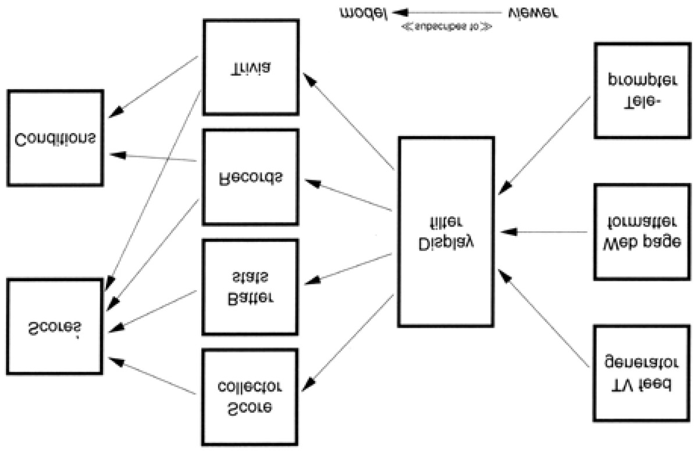

The Netscape browser has actually implemented preferences using both of these
techniques. In Version 3, preferences were saved as simple key/value pairs:
SHOW_TOOLBAR: False
Later, Version 4 preferences looked more like JavaScript:
user_pref("custtoolbar.Browser.Navigation_Toolbar.open", false);
Metadata-Driven Applications
But we want to go beyond using metadata for simple preferences. We want to configure
and drive the application via metadata as much as possible. Our goal is to think
declaratively (specifying what is to be done, not how) and create highly dynamic and
adaptable programs. We do this by adopting a general rule: program for the general case,
and put the specifics somewhere else—outside the compiled code base.
Tip 38
Put Abstractions in Code Details in Metadata
There are several benefits to this approach:
It forces you to decouple your design, which results in a more flexible and
adaptable program.
It forces you to create a more robust, abstract design by deferring
details—deferring them all the way out of the program.
You can customize the application without recompiling it. You can also use this
level of customization to provide easy work-arounds for critical bugs in live
production systems.
Metadata can be expressed in a manner that's much closer to the problem domain
than a general-purpose programming language might be (see Domain Languages).
You may even be able to implement several different projects using the same
application engine, but with different metadata.
We want to defer definition of most details until the last moment, and leave the details as
soft—as easy to change—as we can. By crafting a solution that allows us to make changes
quickly, we stand a better chance of coping with the flood of directional shifts that swamp
many projects (see Reversibility).
Business Logic
So you've made the choice of database engine a configuration option, and provided
metadata to determine the user-interface style. Can we do more? Definitely.
Because business policy and rules are more likely to change than any other aspect of the
project, it makes sense to maintain them in a very flexible format.
For example, your purchasing application may include various corporate policies. Maybe
you pay small suppliers in 45 days and large ones in 90 days. Make the definitions of the
supplier types, as well as the time periods themselves, configurable. Take the opportunity
to generalize.
Maybe you are writing a system with horrendous workflow requirements. Actions start and
stop according to complex (and changing) business rules. Consider encoding them in
some kind of rule-based (or expert) system, embedded within your application. That way,
you'll configure it by writing rules, not cutting code.
Less complex logic can be expressed using a mini-language, removing the need to
recompile and redeploy when the environment changes. Have a look at page 58 for an
example.
When to Configure
As mentioned in The power of plain Text, we recommend representing
configuration metadata in plain text—it makes life that much easier.
But when should a program read this configuration? Many programs will scan
such things only at startup, which is unfortunate. If you need to change the
configuration, this forces you to restart the application. A more flexible approach
is to write programs that can reload their configuration while they're running. This
flexibility comes at a cost: it is more complex to implement.
So consider how your application will be used: if it is a long-running server
process, you will want to provide some way to reread and apply metadata while
the program is running. For a small client GUI application that restarts quickly,
you may not need to.
This phenomenon is not limited to application code. We've all been annoyed at
operating systems that force us to reboot when we install some simple
application or change an innocuous parameter.
An Example: Enterprise Java Beans
Enterprise Java Beans (EJB) is a framework for simplifying programming in a distributed,
transaction-based environment. We mention it here because EJB illustrates how metadata
can be used both to configure applications and to reduce the complexity of writing code.
Suppose you want to create some Java software that will participate in transactions across
different machines, between different database vendors, and with different thread and
load-balancing models.
The good news is, you don't have to worry about all that. You write a bean— a
self-contained object that follows certain conventions—and place it in a bean container
that manages much of the low-level detail on your behalf. You can write the code for a
bean without including any transaction operations or thread management; EJB uses
metadata to specify how transactions should be handled.
Thread allocation and load balancing are specified as metadata to the underlying
transaction service that the container uses. This separation allows us great flexibility to
configure the environment dynamically, at runtime.
The bean's container can manage transactions on the bean's behalf in one of several
different styles (including an option where you control your own commits and rollbacks). All
of the parameters that affect the bean's behavior are specified in the bean's deployment
descriptor— a serialized object that contains the metadata we need.
Distributed systems such as EJB are leading the way into a new world of configurable,
dynamic systems.
Cooperative Configuration
We've talked about users and developers configuring dynamic applications. But what
happens if you let applications configure each other—software that adapts itself to its
environment? Unplanned, spur-of-the-moment configuration of existing software is a
powerful concept.
Operating systems already configure themselves to hardware as they boot, and Web
browsers update themselves with new components automatically.
Your larger applications probably already have issues with handling different versions of
data and different releases of libraries and operating systems. Perhaps a more dynamic
approach will help.
Don't Write Dodo-Code
Without metadata, your code is not as adaptable or flexible as it could be. Is this a bad
thing? Well, out here in the real world, species that don't adapt die.
The dodo didn't adapt to the presence of humans and their livestock on the island of
Mauritius, and quickly became extinct. [2] It was the first documented extinction of a species
at the hand of man.
[2] It didn't help that the settlers beat the placid (read stupid) birds to death with clubs for sport.

Don't let your project (or your career) go the way of the dodo.
Related sections include:
Challenges
For your current project, consider how much of the application might be moved out
of the program itself to metadata. What would the resultant "engine" look like?
Would you be able to reuse that engine in the context of a different application?
Exercises
28.
Which of the following things would be better represented as code within a
program, and which externally as metadata?
1. Communication port assignments
2. An editor's support for highlighting the syntax of various languages
3. An editor's support for different graphic devices
4. A state machine for a parser or scanner
5. Sample values and results for use in unit testing
I l@ve RuBoard


I l@ve RuBoard
Temporal Coupling
What is temporal coupling all about, you may ask. It's about time.
Time is an often ignored aspect of software architectures. The only time that preoccupies us is the
time on the schedule, the time left until we ship—but this is not what we're talking about here. Instead,
we are talking about the role of time as a design element of the software itself. There are two aspects
of time that are important to us: concurrency (things happening at the same time) and ordering (the
relative positions of things in time).
We don't usually approach programming with either of these aspects in mind. When people first sit
down to design an architecture or write a program, things tend to be linear. That's the way most people
think— do this and then always do that. But thinking this way leads to temporal coupling: coupling in
time. Method A must always be called before method B; only one report can be run at a time; you
must wait for the screen to redraw before the button click is received. Tick must happen before tock.
This approach is not very flexible, and not very realistic.
We need to allow for concurrency[3] and to think about decoupling any time or order dependencies. In
doing so, we can gain flexibility and reduce any time-based dependencies in many areas of
development: workflow analysis, architecture, design, and deployment.
[3] We won't go into the details of concurrent or parallel programming here; a good computer science
textbook should cover the basics, including scheduling, deadlock, star-vation, mutual
exclusion/semaphores, and so on.
Workflow
On many projects, we need to model and analyze the users' workflows as part of requirements
analysis. We'd like to find out what can happen at the same time, and what must happen in a strict
order. One way to do this is to capture their description of workflow using a notation such as the UML
activity diagram. [4]
[4] For more information on all of the UML diagram types, see [FS97].
An activity diagram consists of a set of actions drawn as rounded boxes. The arrow leaving an action
leads to either another action (which can start once the first action completes) or to a thick line called a
synchronization bar. Once all the actions leading into a synchronization bar are complete, you can
then proceed along any arrows leaving the bar. An action with no arrows leading into it can be started
at any time.
You can use activity diagrams to maximize parallelism by identifying activities that could be performed
in parallel, but aren't.
Tip 39
Analyze Workflow to Improve Concurrency
For instance, in our blender project (Exercise 17, page 119), users may initially describe their current
workflow as follows.
1. Open blender
2. Open piña colada mix
3. Put mix in blender
4. Measure 1/2 cup white rum
5. Pour in rum
6. Add 2 cups of ice
7. Close blender
8. Liquefy for 2 minutes
9. Open blender
10. Get glasses
11. Get pink umbrellas
12. Serve
Even though they describe these actions serially, and may even perform them serially, we notice that
many of them could be performed in parallel, as we show in the activity diagram in Figure 5.2 on the
next page.
Figure 5.2. UML activity diagram: making a piña colada

It can be eye-opening to see where the dependencies really exist. In this instance, the top-level tasks
(1, 2, 4, 10, and 11) can all happen concurrently, up front. Tasks 3, 5, and 6 can happen in parallel
later.
If you were in a piña colada-making contest, these optimizations may make all the difference.
Architecture
We wrote an On-Line Transaction Processing (OLTP) system a few years ago. At its simplest, all the
system had to do was read a request and process the transaction against the database. But we wrote
a three-tier, multiprocessing distributed application: each component was an independent entity that
ran concurrently with all other components. While this sounds like more work, it wasn't: taking
advantage of temporal decoupling made it easier to write. Let's take a closer look at this project.
The system takes in requests from a large number of data communication lines and processes
transactions against a back-end database.
The design addresses the following constraints:
Database operations take a relatively long time to complete.
For each transaction, we must not block communication services while a database transaction
is being processed.
Database performance suffers with too many concurrent sessions.
Multiple transactions are in progress concurrently on each data line.
Figure 5.3. OLTP architecture overview
Each box represents a separate process; processes communicate via work queues. Each input
process monitors one incoming communication line, and makes requests to the application server. All
requests are asynchronous: as soon as the input process makes its current request, it goes back to
monitoring the line for more traffic. Similarly, the application server makes requests of the database
process,[5] and is notified when the individual transaction is complete.
[5] Even though we show the database as a single, monolithic entity, it is not. The database software is
partitioned into several processes and client threads, but this is handled internally by the database
software and isn't part of our example.
This example also shows a way to get quick and dirty load balancing among multiple consumer
processes: the hungry consumer model.
In a hungry consumer model, you replace the central scheduler with a number of independent
consumer tasks and a centralized work queue. Each consumer task grabs a piece from the work
queue and goes on about the business of processing it. As each task finishes its work, it goes back to
the queue for some more. This way, if any particular task gets bogged down, the others can pick up
the slack, and each individual component can proceed at its own pace. Each component is temporally
decoupled from the others.
Tip 40
Design Using Services
Instead of components, we have really created services— independent, concurrent objects behind
well-defined, consistent interfaces.
Design for Concurrency
The rising acceptance of Java as a platform has exposed more developers to multithreaded
programming. But programming with threads imposes some design constraints—and that's a good
thing. Those constraints are actually so helpful that we want to abide by them whenever we program.
It will help us decouple our code and fight programming by coincidence.
With linear code, it's easy to make assumptions that lead to sloppy programming. But concurrency
forces you to think through things a bit more carefully—you're not alone at the party anymore.
Because things can now happen at the "same time," you may suddenly see some time-based
dependencies.
To begin with, any global or static variables must be protected from concurrent access. Now may be a
good time to ask yourself why you need a global variable in the first place. In addition, you need to
make sure that you present consistent state information, regardless of the order of calls. For example,
when is it valid to query the state of your object? If your object is in an invalid state between certain
calls, you may be relying on a coincidence that no one can call your object at that point in time.
Suppose you have a windowing subsystem where the widgets are first created and then shown on the
display in two separate steps. You aren't allowed to set state in the widget until it is shown. Depending
on how the code is set up, you may be relying on the fact that no other object can use the created
widget until you've shown it on the screen.
But this may not be true in a concurrent system. Objects must always be in a valid state when called,
and they can be called at the most awkward times. You must ensure that an object is in a valid state
any time it could possibly be called. Often this problem shows up with classes that define separate
constructor and initialization routines (where the constructor doesn't leave the object in an initialized
state). Using class invariants, discussed in Design by Contract, will help you avoid this trap.
Cleaner Interfaces
Thinking about concurrency and time-ordered dependencies can lead you to design cleaner interfaces
as well. Consider the C library routine strtok, which breaks a string into tokens.
The design of strtok isn't thread safe, [6] but that isn't the worst part: look at the time dependency. You
must make the first call to strtok with the variable you want to parse, and all successive calls with a
NULL instead. If you pass in a non-NULL value, it restarts the parse on that buffer instead. Without
even considering threads, suppose you wanted to use strtok to parse two separate strings at the same
time:
[6] It uses static data to maintain the current position in the buffer. The static data isn't protected against
concurrent access, so it isn't thread safe. In addition, it clobbers the first argument you pass in, which can
lead to some nasty surprises.
char buf1[BUFSIZ];
char buf2[BUFSIZ];
char *p, *q;
strcpy(buf1, " this is a test");
strcpy(buf2, " this ain't gonna work");
p = strtok(buf1, " ");
q = strtok(buf2, " ");
while (p && q) {
printf( "%s %s\ n", p, q);
p = strtok(NULL, " ");
q = strtok(NULL, " ");
}
The code as shown will not work: there is implicit state retained in strtok between calls. You have to
use strtok on just one buffer at a time.
Now in Java, the design of a string parser has to be different. It must be thread safe and present a
consistent state.
StringTokenizer st1 = new StringTokenizer(" this is a test");
StringTokenizer st2 = new StringTokenizer(" this test will work");
while (st1.hasMoreTokens() && st2 hasMoreTokens()) {
System.out.println(st1.nextToken());
System.out.println(st2.nextToken());
}
StringTokenizer is a much cleaner, more maintainable, interface. It contains no surprises, and won't
cause mysterious bugs in the future, as strtok might.
Tip 41
Always Design for Concurrency
Deployment


Once you've designed an architecture with an element of concurrency, it becomes easier to think
about handling many concurrent services: the model becomes pervasive.
Now you can be flexible as to how the application is deployed: standalone, client-server, or n-tier. By
architecting your system as independent services, you can make the configuration dynamic as well. By
planning for concurrency, and decoupling operations in time, you have all these options—including the
stand-alone option, where you can choose not to be concurrent.
Going the other way (trying to add concurrency to a nonconcurrent application) is much harder. If we
design to allow for concurrency, we can more easily meet scalability or performance requirements
when the time comes—and if the time never comes, we still have the benefit of a cleaner design.
Isn't it about time?
Related sections include:
Challenges
How many tasks do you perform in parallel when you get ready for work in the morning?
Could you express this in a UML activity diagram? Can you find some way to get ready more
quickly by increasing concurrency?
I l@ve RuBoard


I l@ve RuBoard
It's Just a View
Still, a man hears
What he wants to hear
And disregards the rest
La la la…
Simon and Garfunkel, "The Boxer"
Early on we are taught not to write a program as a single big chunk, but that we should "divide and
conquer" and separate a program into modules. Each module has its own responsibilities; in fact, a
good definition of a module (or class) is that it has a single, well-defined responsibility.
But once you separate a program into different modules based on responsibility, you have a new
problem. At runtime, how do the objects talk to each other? How do you manage the logical
dependencies between them? That is, how do you synchronize changes in state (or updates to data
values) in these different objects? It needs to be done in a clean, flexible manner—we don't want them
to know too much about each other. We want each module to be like the man in the song and just
hear what it wants to hear.
We'll start off with the concept of an event. An event is simply a special message that says "something
interesting just happened" (interesting, of course, lies in the eye of the beholder). We can use events
to signal changes in one object that some other object may be interested in.
Using events in this way minimizes coupling between those objects—the sender of the event doesn't
need to have any explicit knowledge of the receiver. In fact, there could be multiple receivers, each
one focused on its own agenda (of which the sender is blissfully unaware).
We need to exercise some care in using events, however. In an early version of Java, for example,
one routine received all the events destined for a particular application. Not exactly the road to easy
maintenance or evolution.
Publish/Subscribe
Why is it bad to push all the events through a single routine? It violates object encapsulation—that one
routine now has to have intimate knowledge of the interactions among many objects. It also increases
the coupling—and we're trying to decrease coupling. Because the objects themselves have to have
knowledge of these events as well, you are probably going to violate the DRY principle, orthogonality,
and perhaps even sections of the Geneva Convention. You may have seen this kind of code—it is

usually dominated by a huge case statement or multiway if-then. We can do better.
Objects should be able to register to receive only the events they need, and should never be sent
events they don't need. We don't want to spam our objects! Instead, we can use a publish/subscribe
protocol, illustrated using the UML sequence diagram in Figure 5.4 on the next page.[7]
[7] See also the Observer pattern in [GHJV95] for more information.
Figure 5.4. Publish/subscribe protocol
A sequence diagram shows the flow of messages among several objects, with objects arranged in
columns. Each message is shown as a labeled arrow from the sender's column to the receiver's
column. An asterisk in the label means that more than one message of this type can be sent.
If we are interested in certain events generated by a Publisher, all we have to do is register ourselves.
The Publisher keeps track of all interested Subscriber objects; when the Publisher generates an event
of interest, it will call each Subscriber in turn and notify them that the event has occurred.
There are several variations on this theme—mirroring other communication styles. Objects may use
publish/subscribe on a peer-to-peer basis (as we saw above); they may use a "software bus" where a
centralized object maintains the database of listeners and dispatches messages appropriately. You
might even have a scheme where critical events get broadcast to all listeners—registered or not. One
possible implementation of events in a distributed environment is illustrated by the CORBA Event
Service, described in the box on the following page.
We can use this publish/subscribe mechanism to implement a very important design concept: the
separation of a model from views of the model. Let's start with a GUI-based example, using the
Smalltalk design in which this concept was born.
Model-View-Controller
Suppose you have a spreadsheet application. In addition to the numbers in the spreadsheet itself, you
also have a graph that displays the numbers as a bar chart and a running total dialog box that shows
the sum of a column in the spreadsheet.
The CORBA Event Service
The CORBA Event Service allows participating objects to send and receive
event notifications via a common bus, the event channel. The event channel
arbitrates event handling, and also decouples event producers from event
consumers. It works in two basic ways: push and pull.
In push mode, event suppliers inform the event channel that an event has
occurred. The channel then automatically distributes that event to all client
objects that have registered interest.
In pull mode, clients periodically poll the event channel, which in turn polls the
supplier that offers event data corresponding to the request.
Although the CORBA Event Service can be used to implement all of the event
models discussed in this section, you can also view it as a different animal.
CORBA facilities communication among objects written in different programming
languages running on geographically dispersed machines with different
architectures. Sitting on top of CORBA, the event service give you a decoupled
way of interacting with applications around the world, written by people you've
never met, using programming languages you'd rather not know about.
Obviously, we don't want to have three separate copies of the data. So we create a model— the data
itself, with common operations to manipulate it. Then we can create separate views that display the
data in different ways: as a spreadsheet, as a graph, or in a totals box. Each of these views may have
its own controller. The graph view may have a controller that allows you to zoom in or out, or pan
around the data, for example. None of this affects the data itself, just that view.
This is the key concept behind the Model-View-Controller (MVC0 idiom: separating the model from
both the GUI that represents it and the controls that manage the view. [8]
[8] The view and controller are tightly coupled, and in some Implementations of MVC the view and
controller are a single component.
By doing so, you can take advantage of some interesting possibilities. You can support multiple views
of the same data model. You can use common viewers on many different data models. You can even
support multiple controllers to provide nontraditional input mechanisms.
Tip 42
Separate Views from Models
By loosening the coupling between the model and the view/controller, you buy yourself a lot of
flexibility at low cost. In fact, this technique is one of the most important ways of maintaining
reversibility (see Reversibility).
Java Tree View
A good example of an MVC design can be found in the Java tree widget. The tree widget (which
displays a clickable, traversable tree) is actually a set of several different classes organized in an MVC
pattern.
To produce a fully functional tree widget, all you need to do is provide a data source that conforms to
the TreeModel interface. Your code now becomes the model for the tree.
The view is created by the TreeCellRenderer and TreeCellEditor classes, which can be inherited from
and customized to provide different colors, fonts, and icons in the widget. JTree acts as the controller
for the tree widget and provides some general viewing functionality.
Because we have decoupled the model from the view, we simplify the programming a great deal. You
don't have to think about programming a tree widget anymore. Instead, you just provide a data source.
Suppose the vice president comes up to you and wants a quick application that lets her navigate the
company's organizational chart, which is held in a legacy database on the mainframe. Just write a
wrapper that takes the mainframe data, presents it as a TreeModel, and voilà: you have a fully
navigable tree widget.
Now you can get fancy and start using the viewer classes; you can change how nodes are rendered,
and use special icons, fonts, or colors. When the VP comes back and says the new corporate
standards dictate the use of a Skull and Crossbones icon for certain employees, you can make the
changes to TreeCellRenderer without touching any other code.
Beyond GUIs
While MVC is typically taught in the context of GUI development, it is really a general-purpose
programming technique. The view is an interpretation of the model (perhaps a subset)—it doesn't
need to be graphical. The controller is more of a coordination mechanism, and doesn't have to be
related to any sort of input device.
Model. The abstract data model representing the target object. The model has no direct
knowledge of any views or controllers.
View. A way to interpret the model. It subscribes to changes in the model and logical events
from the controller.
Controller. A way to control the view and provide the model with new data. It publishes
events to both the model and the view.
Let's look at a nongraphical example.
Baseball is a unique institution. Where else can you learn such gems of trivia as "this has become the
highest-scoring game played on a Tuesday, in the rain, under artificial lights, between teams whose
names start with a vowel?" Suppose we were charged with developing software to support those
intrepid announcers who must dutifully report on the scores, the statistics, and the trivia.
Clearly we need information on the game in progress—the teams playing, the conditions, the player at
bat, the score, and so on. These facts form our models; they will be updated as new information
arrives (a pitcher is changed, a player strikes out, it starts raining…).
We'll then have a number of view objects that use these models. One view might look for runs so it
can update the current score. Another may receive notifications of new batters, and retrieve a brief
summary of their year-to-date statistics. A third viewer may look at the data and check for new world
records. We might even have a trivia viewer, responsible for coming up with those weird and useless
facts that thrill the viewing public.
But we don't want to flood the poor announcer with all of these views directly. Instead, we'll have each
view generate notifications of "interesting" events, and let some higher-level object schedule what gets
shown. [9]
[9] The fact that a plane flies overhead probably isn't interesting unless it's the 100th plane to fly overhead
that night.
These viewer objects have suddenly become models for the higher-level object, which itself might
then be a model for different formatting viewers. One formatting viewer might create the teleprompter
script for the announcer, another might generate video captions directly on the satellite uplink, another
might update the network's or team's Web pages (see Figure 5.5).

Figure 5.5. Baseball reporting, Viewers subscribe to models.
This kind of model-viewer network is a common (and valuable) design technique. Each link decouples
raw data from the events that created it—each new viewer is an abstraction. And because the
relationships are a network (not just a linear chain), we have a lot of flexibility. Each model may have
many viewers, and one viewer may work with multiple models.
In advanced systems such as this one, it can be handy to have debugging views— specialized views
that show you in-depth details of the model. Adding a facility to trace individual events can be a great
time saver as well.
Still Coupled (After All These Years)
Despite the decrease in coupling we have achieved, listeners and event generators (subscribers and
publishers) still have some knowledge of each other. In Java, for instance, they must agree on
common interface definitions and calling conventions.
In the next section, we'll look at ways of reducing coupling even further by using a form of publish and
subscribe where none of the participants need know about each other, or call each other directly.
Related sections include:


Decoupling and the Law of Demeter
Exercises
29.
Suppose you have an airline reservation system that includes the concept of a flight:
public interface Flight {
// Return false if flight full.
public boolean addPassenger(Passenger p);
public void addToWaitList(Passenger p);
public int getFlightCapacity();
public int getNumPassengers();
}
If you add a passenger to the wait list, they'll be put on the flight automatically when an
opening becomes available.
There's a massive reporting job that goes through looking for overbooked or full flights to
suggest when additional flights might be scheduled. It works fine, but it takes hours to
run.
We'd like to have a little more flexibility in processing wait-list passengers, and we've got
to do something about that big report—it takes too long to run. Use the ideas from this
section to redesign this interface.
I l@ve RuBoard


I l@ve RuBoard
Blackboards
The writing is on the wall…
You may not usually associate elegance with police detectives, picturing instead some sort of
doughnut and coffee cliché. But consider how detectives might use a blackboard to coordinate and
solve a murder investigation.
Suppose the chief inspector starts off by setting up a large blackboard in the conference room. On it,
he writes a single question:
H. DUMPTY (MALE, EGG): ACCIDENT OR MURDER?
Did Humpty really fall, or was he pushed? Each detective may make contributions to this potential
murder mystery by adding facts, statements from witnesses, any forensic evidence that might arise,
and so on. As the data accumulates, a detective might notice a connection and post that observation
or speculation as well. This process continues, across all shifts, with many different people and
agents, until the case is closed. A sample blackboard is shown in Figure 5.6 on the next page.
Figure 5.6. Someone found a connection between Humpty's gambling debts and the phone logs. Perhaps he
was getting threatening phone calls.
Some key features of the blackboard approach are:
None of the detectives needs to know of the existence of any other detective—they watch the
board for new information, and add their findings.
The detectives may be trained in different disciplines, may have different levels of education
and expertise, and may not even work in the same precinct. They share a desire to solve the
case, but that's all.
Different detectives may come and go during the course of the process, and may work
different shifts.
There are no restrictions on what may be placed on the blackboard. It may be pictures,
sentences, physical evidence, and so on.
We've worked on a number of projects that involved a workflow or distributed data gathering process.
With each, designing a solution around a simple blackboard model gave us a solid metaphor to work
with: all of the features listed above using detectives are just as applicable to objects and code
modules.
A blackboard system lets us decouple our objects from each other completely, providing a forum
where knowledge consumers and producers can exchange data anonymously and asynchronously.
As you might guess, it also cuts down on the amount of code we have to write.
Blackboard Implementations
Computer-based blackboard systems were originally invented for use in artificial intelligence
applications where the problems to be solved were large and complex—speech recognition,
knowledge-based reasoning systems, and so on.
Modern distributed blackboard-like systems such as JavaSpaces and T Spaces [URL 50, URL 25] are
based on a model of key/value pairs first popularized in Linda [CG90], where the concept was known
as tuple space.
With these systems, you can store active Java objects—not just data—on the blackboard, and retrieve
them by partial matching of fields (via templates and wildcards) or by subtypes. For example, suppose
you had a type Author, which is a subtype of Person. You could search a blackboard containing
Person objects by using an Author template with a lastName value of "Shakespeare." You'd get Bill
Shakespeare the author, but not Fred Shakespeare the gardener.
The main operations in JavaSpaces are:
Name
Function
read
Search for and retrieve data from the space.
write
Put an item into the space.
take
Similar to read, but removes the item from the space as well.
notify Set up a notification to occur whenever an object is written that matches the template.
T Spaces supports a similar set of operations, but with different names and slightly different semantics.
Both systems are built like a database product; they provide atomic operations and distributed
transactions to ensure data integrity.
Since we can store objects, we can use a blackboard to design algorithms based on a flow of objects,
not just data. It's as if our detectives could pin people to the blackboard—witnesses themselves, not
just their statements. Anyone can ask a witness questions in the pursuit of the case, post the
transcript, and move that witness to another area of the blackboard, where he might respond
differently (if you allow the witness to read the blackboard too).
A big advantage of systems such as these is that you have a single, consistent interface to the
blackboard. When building a conventional distributed application, you can spend a great deal of time
crafting unique API calls for every distributed transaction and interaction in the system. With the
combinatorial explosion of interfaces and interactions, the project can quickly become a nightmare.
Organizing Your Blackboard
When the detectives work on large cases, the blackboard may be- come
cluttered, and it may become difficult to locate data on the board. The solution is
to partition the blackboard and start to organize the data on the blackboard
somehow.
Different software systems handle this partitioning in different ways; some use
fairly flat zones or interests groups, while others adopt a more hierarchical
treelike structure.
The blackboard style of programming removes the need for so many interfaces, making for a more
elegant and consistent system.
Application Example
Suppose we are writing a program to accept and process mortgage or loan applications. The laws that
govern this area are odiously complex, with federal, state, and local governments all having their say.
The lender must prove they have disclosed certain things, and must ask for certain information—but
must not ask certain other questions, and so on, and so on.
Beyond the miasma of applicable law, we also have the following problems to contend with.
There is no guarantee on the order in which data arrives. For instance, queries for a credit
check or title search may take a substantial amount of time, while items such as name and
address may be available immediately.
Data gathering may be done by different people, distributed across different offices, in
different time zones.
Some data gathering may be done automatically by other systems. This data may arrive
asynchronously as well.
Nonetheless, certain data may still be dependent on other data. For instance, you may not be
able to start the title search for a car until you get proof of ownership or insurance.
Arrival of new data may raise new questions and policies. Suppose the credit check comes
back with a less than glowing report; now you need these five extra forms and perhaps a
blood sample.
You can try to handle every possible combination and circumstance using a workflow system. Many
such systems exist, but they can be complex and programmer intensive. As regulations change, the
work-flow must be reorganized: people may have to change their procedures and hard-wired code
may have to be rewritten.
A blackboard, in combination with a rules engine that encapsulates the legal requirements, is an
elegant solution to the difficulties found here. Order of data arrival is irrelevant: when a fact is posted it
can trigger the appropriate rules. Feedback is easily handled as well: the output of any set of rules can
post to the blackboard and cause the triggering of yet more applicable rules.
Tip 43
Use Blackboards to Coordinate Workflow
We can use the blackboard to coordinate disparate facts and agents, while still maintaining
independence and even isolation among participants.
You can accomplish the same results with more brute-force methods, of course, but you'll have a
more brittle system. When it breaks, all the king's horses and all the king's men might not get your
program working again.
Related sections include:
Challenges
Do you use blackboard systems in the real world—the message board by the refrigerator, or
the big whiteboard at work? What makes them effective? Are messages ever posted with a
consistent format? Does it matter?
Exercises
30.
For each of the following applications, would a blackboard system be appropriate or not?
1.
Image processing. You'd like to have a number of parallel processes grab


chunks of an image, process them, and put the completed chunk back.
2. Group calendaring. You've got people scattered across the globe, in different
time zones, and speaking different languages, trying to schedule a meeting.
3. Network monitoring tool. The system gathers performance statistics and
collects trouble reports. You'd like to implement some agents to use this
information to look for trouble in the system.
I l@ve RuBoard


I l@ve RuBoard
Chapter 6. While You Are Coding
Conventional wisdom says that once a project is in the coding phase, the work is mostly mechanical,
transcribing the design into executable statements. We think that this attitude is the single biggest
reason that many programs are ugly, inefficient, poorly structured, unmaintainable, and just plain
wrong.
Coding is not mechanical. If it were, all the CASE tools that people pinned their hopes on in the early
1980s would have replaced programmers long ago. There are decisions to be made every
minute—decisions that require careful thought and judgment if the resulting program is to enjoy a long,
accurate, and productive life.
Developers who don't actively think about their code are programming by coincidence—the code
might work, but there's no particular reason why. In Programming by Coincidence, we advocate a
more positive involvement with the coding process.
While most of the code we write executes quickly, we occasionally develop algorithms that have the
potential to bog down even the fastest processors. In Algorithm Speed, we discuss ways to estimate
the speed of code, and we give some tips on how to spot potential problems before they happen.
Pragmatic Programmers think critically about all code, including our own. We constantly see room for
improvement in our programs and our designs. In Refactoring, we look at techniques that help us fix
up existing code even while we're in the midst of a project.
Something that should be in the back of your mind whenever you're producing code is that you'll
someday have to test it. Make code easy to test, and you'll increase the likelihood that it will actually
get tested, a thought we develop in Code That's Easy to Test.
Finally, in Evil Wizards, we suggest that you should be careful of tools that write reams of code on
your behalf unless you understand what they're doing.
Most of us can drive a car largely on autopilot—we don't explicitly command our foot to press a pedal,
or our arm to turn the wheel—we just think "slow down and turn right." However, good, safe drivers are
constantly reviewing the situation, checking for potential problems, and putting themselves into good
positions in case the unexpected happens. The same is true of coding—it may be largely routine, but
keeping your wits about you could well prevent a disaster.
I l@ve RuBoard


I l@ve RuBoard
Programming by Coincidence
Do you ever watch old black-and-white war movies? The weary soldier advances cautiously out of the
brush. There's a clearing ahead: are there any land mines, or is it safe to cross? There aren't any
indications that it's a minefield—no signs, barbed wire, or craters. The soldier pokes the ground ahead
of him with his bayonet and winces, expecting an explosion. There isn't one. So he proceeds
painstakingly through the field for a while, prodding and poking as he goes. Eventually, convinced that
the field is safe, he straightens up and marches proudly forward, only to be blown to pieces.
The soldier's initial probes for mines revealed nothing, but this was merely lucky. He was led to a false
conclusion—with disastrous results.
As developers, we also work in minefields. There are hundreds of traps just waiting to catch us each
day. Remembering the soldier's tale, we should be wary of drawing false conclusions. We should
avoid programming by coincidence—relying on luck and accidental successes— in favor of
programming deliberately.
How to Program by Coincidence
Suppose Fred is given a programming assignment. Fred types in some code, tries it, and it seems to
work. Fred types in some more code, tries it, and it still seems to work. After several weeks of coding
this way, the program suddenly stops working, and after hours of trying to fix it, he still doesn't know
why. Fred may well spend a significant amount of time chasing this piece of code around without ever
being able to fix it. No matter what he does, it just doesn't ever seem to work right.
Fred doesn't know why the code is failing because he didn't know why it worked in the first place. It
seemed to work, given the limited "testing" that Fred did, but that was just a coincidence. Buoyed by
false confidence, Fred charged ahead into oblivion. Now, most intelligent people may know someone
like Fred, but we know better. We don't rely on coincidences—do we?
Sometimes we might. Sometimes it can be pretty easy to confuse a happy coincidence with a
purposeful plan. Let's look at a few examples.
Accidents of Implementation
Accidents of implementation are things that happen simply because that's the way the code is
currently written. You end up relying on undocumented error or boundary conditions.
Suppose you call a routine with bad data. The routine responds in a particular way, and you code
based on that response. But the author didn't intend for the routine to work that way—it was never
even considered. When the routine gets "fixed," your code may break. In the most extreme case, the
routine you called may not even be designed to do what you want, but it seems to work okay. Calling
things in the wrong order, or in the wrong context, is a related problem.
paint(g);
invalidate();
validate();
revalidate();
repaint();
paintImmediately(r);
Here it looks like Fred is desperately trying to get something out on the screen. But these routines
were never designed to be called this way; although they seem to work, that's really just a coincidence.
To add insult to injury, when the component finally does get drawn, Fred won't try to go back and take
out the spurious calls. "It works now, better leave well enough alone…."
It's easy to be fooled by this line of thought. Why should you take the risk of messing with something
that's working? Well, we can think of several reasons:
It may not really be working—it might just look like it is.
The boundary condition you rely on may be just an accident. In different circumstances (a
different screen resolution, perhaps), it might behave differently.
Undocumented behavior may change with the next release of the library.
Additional and unnecessary calls make your code slower.
Additional calls also increase the risk of introducing new bugs of their own.
For code you write that others will call, the basic principles of good modularization and of hiding
implementation behind small, well-documented interfaces can all help. A well-specified contract (see
Design by Contract) can help eliminate misunderstandings.
For routines you call, rely only on documented behavior. If you can't, for whatever reason, then
document your assumption well.
Accidents of Context
You can have "accidents of context" as well. Suppose you are writing a utility module. Just because
you are currently coding for a GUI environment, does the module have to rely on a GUI being present?
Are you relying on English-speaking users? Literate users? What else are you relying on that isn't
guaranteed?
Implicit Assumptions
Coincidences can mislead at all levels—from generating requirements through to testing. Testing is
particularly fraught with false causalities and coincidental outcomes. It's easy to assume that X causes
Y, but as we said in Debugging: don't assume it, prove it.
At all levels, people operate with many assumptions in mind—but these assumptions are rarely
documented and are often in conflict between different developers. Assumptions that aren't based on
well-established facts are the bane of all projects.
Tip 44
Don't Program by Coincidence
How to Program Deliberately
We want to spend less time churning out code, catch and fix errors as early in the development cycle
as possible, and create fewer errors to begin with. It helps if we can program deliberately:
Always be aware of what you are doing. Fred let things get slowly out of hand, until he ended
up boiled, like the frog in Stone Soup and Boiled Frogs.
Don't code blindfolded. Attempting to build an application you don't fully understand, or to use
a technology you aren't familiar with, is an invitation to be misled by coincidences.
Proceed from a plan, whether that plan is in your head, on the back of a cocktail napkin, or on
a wall-sized printout from a CASE tool.
Rely only on reliable things. Don't depend on accidents or assumptions. If you can't tell the
difference in particular circumstances, assume the worst.
Document your assumptions. Design by Contract, can help clarify your assumptions in your
own mind, as well as help communicate them to others.
Don't just test your code, but test your assumptions as well. Don't guess; actually try it. Write
an assertion to test your assumptions (see Assertive Programming). If your assertion is right,
you have improved the documentation in your code. If you discover your assumption is wrong,
then count yourself lucky.
Prioritize your effort. Spend time on the important aspects; more than likely, these are the
hard parts. If you don't have fundamentals or infrastructure correct, brilliant bells and whistles
will be irrelevant.
Don't be a slave to history. Don't let existing code dictate future code. All code can be
replaced if it is no longer appropriate. Even within one program, don't let what you've already
done constrain what you do next—be ready to refactor (see Refactoring). This decision may
impact the project schedule. The assumption is that the impact will be less than the cost of
not making the change. [1]
[1] You can also go too far here. We once knew a developer who rewrote all source he was
given because he had his own naming conventions.
So next time something seems to work, but you don't know why, make sure it isn't just a coincidence.
Related sections include:
Exercises
31.
Can you identify some coincidences in the following C code fragment? Assume that this
code is buried deep in a library routine.
fprintf (stderr, " Error, continue? ");
gets(buf);
32.
This piece of C code might work some of the time, on some machines. Then again, it
/* Truncate string to its last maxlen chars */
void string_tail(char *string, int maxlen) {
int len = strlen(string);
if (len > maxlen) {
strcpy(string, string + (len - maxlen));
}
}
33.
This code comes from a general-purpose Java tracing suite. The function writes a string
to a log file. It passes its unit test, but fails when one of the Web developers uses it.


What coincidence does it rely on?
public static void debug(String s) throws IOException {
FileWriter fw = new FileWriter( "debug.log", true);
fw.write(s);
fw.flush();
fw.close();
}
I l@ve RuBoard


I l@ve RuBoard
Algorithm Speed
In Estimating, we talked about estimating things such as how long it takes to walk across town, or how
long a project will take to finish. However, there is another kind of estimating that Pragmatic
Programmers use almost daily: estimating the resources that algorithms use—time, processor,
memory, and so on.
This kind of estimating is often crucial. Given a choice between two ways of doing something, which
do you pick? You know how long your program runs with 1,000 records, but how will it scale to
1,000,000? What parts of the code need optimizing?
It turns out that these questions can often be answered using common sense, some analysis, and a
way of writing approximations called the "big O" notation.
What Do We Mean by Estimating Algorithms?
Most nontrivial algorithms handle some kind of variable input—sorting n strings, inverting an m × n
matrix, or decrypting a message with an n-bit key. Normally, the size of this input will affect the
algorithm: the larger the input, the longer the running time or the more memory used.
If the relationship were always linear (so that the time increased in direct proportion to the value of n),
this section wouldn't be important. However, most significant algorithms are not linear. The good news
is that many are sublinear. A binary search, for example, doesn't need to look at every candidate when
finding a match. The bad news is that other algorithms are considerably worse than linear; runtimes or
memory requirements increase far faster than n. An algorithm that takes a minute to process ten items
may take a lifetime to process 100.
We find that whenever we write anything containing loops or recursive calls, we subconsciously check
the runtime and memory requirements. This is rarely a formal process, but rather a quick confirmation
that what we're doing is sensible in the circumstances. However, we sometimes do find ourselves
performing a more detailed analysis. That's when the O() notation comes in useful.
The O() Notation
The O() notation is a mathematical way of dealing with approximations. When we write that a
2
particular sort routine sorts n records in O( n ) time, we are simply saying that the worst-case time
taken will vary as the square of n. Double the number of records, and the time will increase roughly
fourfold. Think of the O as meaning on the order of. The O() notation puts an upper bound on the value
2
of the thing we're measuring (time, memory, and so on). If we say a function takes O( n ) time, then we
2
know that the upper bound of the time it takes will not grow faster than n . Sometimes we come up
with fairly complex O() functions, but because the highest-order term will dominate the value as n
increases, the convention is to remove all low-order terms, and not to bother showing any constant
2
2
2
multiplying factors. O( n /2 + 3 n) is the same as O( n /2), which is equivalent to O( n ). This is actually a
2
2
weakness of the O() notation—one O( n ) algorithm may be 1,000 times faster than another O( n )
algorithm, but you won't know it from the notation.
Figure 6.1 shows several common O() notations you'll come across, along with a graph comparing
running times of algorithms in each category. Clearly, things quickly start getting out of hand once we
2
get over O( n ).
Figure 6.1. Runtimes of various algorithms

For example, suppose you've got a routine that takes 1 s to process 100 records. How long will it take
to process 1,000? If your code is O(1), then it will still take 1 s. If it's O(lg( n)), then you'll probably be
waiting about 3 s. O( n) will show a linear increase to 10 s, while an O( n lg( n)) will take some 33 s. If
2
you're unlucky enough to have an O( n ) routine, then sit back for 100 s while it does its stuff. And if
n
you're using an exponential algorithm O(2 ), you might want to make a cup of coffee—your routine
263
should finish in about 10
years. Let us know how the universe ends.
The O() notation doesn't apply just to time; you can use it to represent any other resources used by an
algorithm. For example, it is often useful to be able to model memory consumption (see Exercise 35).
Common Sense Estimation
You can estimate the order of many basic algorithms using common sense.
Simple loops. If a simple loop runs from 1 to n, then the algorithm is likely to be O( n) — time
increases linearly with n. Examples include exhaustive searches, finding the maximum value
in an array, and generating checksums.
Nested loops. If you nest a loop inside another, then your algorithm becomes O( m × n) ,
where m and n are the two loops' limits. This commonly occurs in simple sorting algorithms,
such as bubble sort, where the outer loop scans each element in the array in turn, and the
inner loop works out where to place that element in the sorted result. Such sorting algorithms
2
tend to be O( n ).
Binary chop. If your algorithm halves the set of things it considers each time around the
loop, then it is likely to be logarithmic, O(lg( n)) (see Exercise 37). A binary search of a sorted
list, traversing a binary tree, and finding the first set bit in a machine word can all be O(lg( n)).
Divide and conquer. Algorithms that partition their input, work on the two halves
independently, and then combine the result can be O( n lg( n)). The classic example is
quicksort, which works by partitioning the data into two halves and recursively sorting each.
2
Although technically O( n ) , because its behavior degrades when it is fed sorted input, the
average runtime of quicksort is O( n lg( n)).
Combinatoric. Whenever algorithms start looking at the permutations of things, their
running times may get out of hand. This is because permutations involve factorials (there are
5! = 5 × 4 × 3 × 2 × 1 = 120 permutations of the digits from 1 to 5). Time a combinatoric
algorithm for five elements: it will take six times longer to run it for six, and 42 times longer for
seven. Examples include algorithms for many of the acknowledged hard problems—the
traveling salesman problem, optimally packing things into a container, partitioning a set of
numbers so that each set has the same total, and so on. Often, heuristics are used to reduce
the running times of these types of algorithms in particular problem domains.
Algorithm Speed in Practice
It's unlikely that you'll spend much time during your career writing sort routines. The ones in the
libraries available to you will probably outperform anything you may write without substantial effort.
However, the basic kinds of algorithms we've described earlier pop up time and time again. Whenever
you find yourself writing a simple loop, you know that you have an O( n) algorithm. If that loop contains
an inner loop, then you're looking at O( m × n) . You should be asking yourself how large these values
can get. If the numbers are bounded, then you'll know how long the code will take to run. If the
numbers depend on external factors (such as the number of records in an overnight batch run, or the
number of names in a list of people), then you might want to stop and consider the effect that large
values may have on your running time or memory consumption.
Tip 45
Estimate the Order of Your Algorithms
There are some approaches you can take to address potential problems. If you have an algorithm that
2
is O( n ) , try to find a divide and conquer approach that will take you down to O( n lg( n)).
If you're not sure how long your code will take, or how much memory it will use, try running it, varying
the input record count or whatever is likely to impact the runtime. Then plot the results. You should
soon get a good idea of the shape of the curve. Is it curving upward, a straight line, or flattening off as
the input size increases? Three or four points should give you an idea.
2
Also consider just what you're doing in the code itself. A simple O( n ) loop may well perform better
that a complex, O( n lg( n)) one for smaller values of n, particularly if the O( n lg( n)) algorithm has an
expensive inner loop.
In the middle of all this theory, don't forget that there are practical considerations as well. Runtime may
look like it increases linearly for small input sets. But feed the code millions of records and suddenly
the time degrades as the system starts to thrash. If you test a sort routine with random input keys, you
may be surprised the first time it encounters ordered input. Pragmatic Programmers try to cover both
the theoretical and practical bases. After all this estimating, the only timing that counts is the speed of
your code, running in the production environment, with real data. [2] This leads to our next tip.
[2] In fact, while testing the sort algorithms used as an exercise for this section on a 64MB Pentium, the
authors ran out of real memory while running the radix sort with more than seven million numbers. The
sort started using swap space, and times degraded dramatically.
Tip 46
Test Your Estimates
If it's tricky getting accurate timings, use code profilers to count the number of times the different steps
in your algorithm get executed, and plot these figures against the size of the input.
Best Isn't Always Best
You also need to be pragmatic about choosing appropriate algorithms—the fastest one is not always
the best for the job. Given a small input set, a straightforward insertion sort will perform just as well as
a quicksort, and will take you less time to write and debug. You also need to be careful if the algorithm
you choose has a high setup cost. For small input sets, this setup may dwarf the running time and
make the algorithm inappropriate.
Also be wary of premature optimization. It's always a good idea to make sure an algorithm really is a
bottleneck before investing your precious time trying to improve it.
Related sections include:
Challenges
Every developer should have a feel for how algorithms are designed and analyzed. Robert
Sedgewick has written a series of accessible books on the subject ([Sed83, SF96, Sed92]
and others). We recommend adding one of his books to your collection, and making a point of
reading it.
For those who like more detail than Sedgewick provides, read Donald Knuth's definitive Art of
Computer Programming books, which analyze a wide range of algorithms [Knu97a, Knu97b,
Knu98].
In Exercise 34, we look at sorting arrays of long integers. What is the impact if the keys are
more complex, and the overhead of key comparison is high? Does the key structure affect the
efficiency of the sort algorithms, or is the fastest sort always fastest?
Exercises
34.
We have coded a set of simple sort routines, which can be downloaded from our Web
site (http://www.pragmaticprogrammer.com). Run them on various machines available to
you. Do your figures follow the expected curves? What can you deduce about the
relative speeds of your machines? What are the effects of various compiler optimization
settings? Is the radix sort indeed linear?
35.
The routine below prints out the contents of a binary tree. Assuming the tree is
balanced, roughly how much stack space will the routine use while printing a tree of
1,000,000 elements? (Assume that subroutine calls impose no significant stack


void printTree(const Node *node) {
char buffer[1000];
if (node) {
printTree(node->left);
getNodeAsString(node, buffer);
puts(buffer);
printTree(node->right);
}
}
36.
Can you see any way to reduce the stack requirements of the routine in Exercise 35
(apart from reducing the size of the buffer)?
37.
we claimed that a binary chop is O (lg(n)). Can you prove this?
I l@ve RuBoard


I l@ve RuBoard
Refactoring
Change and decay in all around I see …
H. F. Lyte, "Abide With Me"
As a program evolves, it will become necessary to rethink earlier decisions and rework portions of the
code. This process is perfectly natural. Code needs to evolve; it's not a static thing.
Unfortunately, the most common metaphor for software development is building construction (Bertrand
Meyer [Mey97b] uses the term "Software Construction"). But using construction as the guiding
metaphor implies these steps:
1. An architect draws up blueprints.
2. Contractors dig the foundation, build the superstructure, wire and plumb, and apply finishing
touches.
3. The tenants move in and live happily ever after, calling building maintenance to fix any
problems.
Well, software doesn't quite work that way. Rather than construction, software is more like
gardening— it is more organic than concrete. You plant many things in a garden according to an initial
plan and conditions. Some thrive, others are destined to end up as compost. You may move plantings
relative to each other to take advantage of the interplay of light and shadow, wind and rain. Overgrown
plants get split or pruned, and colors that clash may get moved to more aesthetically pleasing
locations. You pull weeds, and you fertilize plantings that are in need of some extra help. You
constantly monitor the health of the garden, and make adjustments (to the soil, the plants, the layout)
as needed.
Business people are comfortable with the metaphor of building construction: it is more scientific than
gardening, it's repeatable, there's a rigid reporting hierarchy for management, and so on. But we're not
building skyscrapers—we aren't as constrained by the boundaries of physics and the real world.
The gardening metaphor is much closer to the realities of software development. Perhaps a certain
routine has grown too large, or is trying to accomplish too much—it needs to be split into two. Things
that don't work out as planned need to be weeded or pruned.
Rewriting, reworking, and re-architecting code is collectively known as refactoring.
When Should You Refactor?
When you come across a stumbling block because the code doesn't quite fit anymore, or you notice
two things that should really be merged, or anything else at all strikes you as being "wrong," don't
hesitate to change it There's no time like the present. Any number of things may cause code to qualify
for refactoring:
Duplication. You've discovered a violation of the DRY principle (The Evils of Duplication).
Nonorthogonal design. You've discovered some code or design that could be made more
orthogonal (Orthogonality).
Outdated knowledge. Things change, requirements drift, and your knowledge of the
problem increases. Code needs to keep up.
Performance. You need to move functionality from one area of the system to another to
improve performance.
Refactoring your code—moving functionality around and updating earlier decisions—is really an
exercise in pain management. Let's face it, changing source code around can be pretty painful: it was
almost working, and now it's really torn up. Many developers are reluctant to start ripping up code just
because it isn't quite right.
Real-World Complications
So you go to your boss or client and say, "This code works, but I need another week to refactor it."
We can't print their reply.
Time pressure is often used as an excuse for not refactoring. But this excuse just doesn't hold up: fail
to refactor now, and there'll be a far greater time investment to fix the problem down the road—when
there are more dependencies to reckon with. Will there be more time available then? Not in our
experience.
You might want to explain this principle to the boss by using a medical analogy: think of the code that
needs refactoring as a "growth." Removing it requires invasive surgery. You can go in now, and take it
out while it is still small. Or, you could wait while it grows and spreads—but removing it then will be
both more expensive and more dangerous. Wait even longer, and you may lose the patient entirely.
Tip 47
Refactor Early, Refactor Often
Keep track of the things that need to be refactored. If you can't refactor something immediately, make
sure that it gets placed on the schedule. Make sure that users of the affected code know that it is
scheduled to be refactored and how this might affect them.
How Do You Refactor?
Refactoring started out in the Smalltalk community, and, along with other trends (such as design
patterns), has started to gain a wider audience. But as a topic it is still fairly new; there isn't much
+
published on it. The first major book on refactoring ([FBB 99], and also [URL 47]) is being published
around the same time as this book.
At its heart, refactoring is redesign. Anything that you or others on your team designed can be
redesigned in light of new facts, deeper understandings, changing requirements, and so on. But if you
proceed to rip up vast quantities of code with wild abandon, you may find yourself in a worse position
than when you started.
Clearly, refactoring is an activity that needs to be undertaken slowly, deliberately, and carefully. Martin
Fowler offers the following simple tips on how to refactor without doing more harm than good (see the
box on in [FS97]):
1. Don't try to refactor and add functionality at the same time.
2. Make sure you have good tests before you begin refactoring. Run the tests as often as
possible. That way you will know quickly if your changes have broken anything.
Automatic Refactoring
Historically, Smalltalk users have always enjoyed a class browser as part
of the IDE. Not to be confused with Web browsers, class browsers let
users navigate through and examine class hierarchies and methods.
Typically, class browsers allow you to edit code, create new methods and
classes, and so on. The next variation on this idea is the refactoring
browser.
A refactoring browser can semiautomatically perform common refactoring
operations for you: splitting up a long routine into smaller ones,
automatically propagating changes to method and variable names, drag
and drop to assist you in moving code, and so on.
As we write this book, this technology has yet to appear outside of the
Smalltalk world, but this is likely to change at the same speed that Java
changes—rapidly. In the meantime, the pioneering Small-talk refactoring
browser can be found online at [URL 20].
3. Take short, deliberate steps: move a field from one class to another, fuse two similar methods
into a superclass. Refactoring often involves making many localized changes that result in a
larger-scale change. If you keep your steps small, and test after each step, you will avoid
prolonged debugging.
We'll talk more about testing at this level in Code That's Easy to Test, and larger-scale testing in
with confidence.
It can also be helpful to make sure that drastic changes to a module—such as altering its interface or
its functionality in an incompatible manner—break the build. That is, old clients of this code should fall
to compile. You can then quickly find the old clients and make the necessary changes to bring them up
to date.
So next time you see a piece of code that isn't quite as it should be, fix both it and everything that
depends on it. Manage the pain: if it hurts now, but is going to hurt even more later, you might as well
get it over with. Remember the lessons of Software Entropy, don't live with broken windows.
Related sections include:
Exercises
38.
The following code has obviously been updated several times over the years, but the
changes haven't improved its structure. Refactor it.
if (state == TEXAS) {
rate = TX_RATE;
amt = base * TX_RATE;
calc = 2*basis(amt) + extra(amt)*1.05;
}
else if ((state == OHIO) || (state == MAINE;
rate = (state == OHIO) ? OH_RATE : MN_RATE]
amt = base * rate;
calc = 2*basis(amt) + extra(amt)*1.05;
if (state == OHIO)
points = 2;
}
else {
rate = 1;
amt = base;
calc = 2*basis(amt) + extra(amt)*1.05;
}
39.
The following Java class needs to support a few more shapes. Refactor the class to
public class Shape {
public static final int SQUARE = 1;
public static final int CIRCLE = 2;
public static final int RIGHT_TRIANGLE = 3;
private int shapeType;
private double size;
public Shape(int shapeType, double size) {
this. shapeType = shapeType;
this. size = size;
}
// ... other methods ...
public double area(){
switch (shapeType) {


case SQUARE: return size*size;
case CIRCLE: return Math.PI*size*size/4.0;
case RIGHT_TRIANGLE: return size*size/2.0;
}
return 0;
}
}
40.
This Java code is part of a framework that will be used throughout your project. Refactor
it to be more general and easier to extend in the future.
public class Window {
public Window( int width, int height) { ... }
public void setSize( int width, int height) { ... }
public boolean overlaps(Window w) { ... }
public int getArea() { ... }
}
I l@ve RuBoard


I l@ve RuBoard
Code That's Easy to Test
The Software IC is a metaphor that people like to toss around when discussing reusability and
component-based development.[3] The idea is that software components should be combined just as
integrated circuit chips are combined. This works only if the components you are using are known to
be reliable.
[3] The term "Software IC" (Integrated Circuit) seems to have been invented in 1986 by Cox and
Novobilski in their Objective-C book Object-Oriented Programming [CN91].
Chips are designed to be tested—not just at the factory, not just when they are installed, but also in
the field when they are deployed. More complex chips and systems may have a full Built-in Self Test
(BIST) feature that runs some base-level diagnostics internally, or a Test Access Mechanism (TAM)
that provides a test harness that allows the external environment to provide stimuli and collect
responses from the chip.
We can do the same thing in software. Like our hardware colleagues, we need to build testability into
the software from the very beginning, and test each piece thoroughly before trying to wire them
together.
Unit Testing
Chip-level testing for hardware is roughly equivalent to unit testing in software—testing done on each
module, in isolation, to verify its behavior. We can get a better feeling for how a module will react in the
big wide world once we have tested it throughly under controlled (even contrived) conditions.
A software unit test is code that exercises a module. Typically, the unit test will establish some kind of
artificial environment, then invoke routines in the module being tested. It then checks the results that
are returned, either against known values or against the results from previous runs of the same test
(regression testing).
Later, when we assemble our "software IC's" into a complete system, we'll have confidence that the
individual parts work as expected, and then we can use the same unit test facilities to test the system
as a whole. We talk about this large-scale checking of the system in Ruthless Testing.
Before we get that far, however, we need to decide what to test at the unit level. Typically,
programmers throw a few random bits of data at the code and call it tested. We can do much better,
using the ideas behind design by contract.
Testing Against Contract
We like to think of unit testing as testing against contract (see Design by Contract). We want to write
test cases that ensure that a given unit honors its contract. This will tell us two things: whether the
code meet the contract, and whether the contract means what we think it means. We want to test that
the module delivers the functionality it promises, over a wide range of test cases and boundary
conditions.
What does this mean in practice? Let's look at the square root routine we first encountered on page
114. Its contract is simple:
require:
argument >= 0;
ensure:
((result * result) - argument).abs <= epsilon*argument;
This tells us what to test:
Pass in a negative argument and ensure that it is rejected.
Pass in an argument of zero to ensure that it is accepted (this is the boundary value).
Pass in values between zero and the maximum expressible argument and verify that the
difference between the square of the result and the original argument is less than some small
fraction of the argument.
Armed with this contract, and assuming that our routine does its own pre- and postcondition checking,
we can write a basic test script to exercise the square root function.
public void testValue(double num, double expected) {
double result = 0.0;
try { // We may throw a
result = mySqrt(num); // precondition exception
}
catch (Throwable e) {
if (num < 0.0) // If input is < 0, then
return; // we're expecting the
else // exception, otherwise
assert(false); // force a test failure
}
assert(Math.abs(expected-result) < epsilon*expected);
}
Then we can call this routine to test our square root function:
testValue(-4.0, 0.0);
testValue( 0.0, 0.0);
testValue( 2.0, 1.4142135624);
testValue(64.0, 8.0);
testValue(1.0e7, 3162.2776602);
This is a pretty simple test; in the real world, any nontrivial module is likely to be dependent on a
number of other modules, so how do we go about testing the combination?
Suppose we have a module A that uses a LinkedList and a Sort. In order, we would test:
1. LinkedList's contract, in full
2. Sort's contract, in full
3. A's contract, which relies on the other contracts but does not directly expose them
This style of testing requires you to test subcomponents of a module first. Once the subcomponents
have been verified, then the module itself can be tested.
If LinkedList and Sort's tests passed, but A's test failed, we can be pretty sure that the problem is in A,
or in A's use of one of those subcomponents. This technique is a great way to reduce debugging
effort: we can quickly concentrate on the likely source of the problem within module A, and not waste
time reexamining its subcomponents.
Why do we go to all this trouble? Above all, we want to avoid creating a "time bomb"—something that
sits around unnoticed and blows up at an awkward moment later in the project. By emphasizing testing
against contract, we can try to avoid as many of those downstream disasters as possible.
Tip 48
Design to Test
When you design a module, or even a single routine, you should design both its contract and the code
to test that contract. By designing code to pass a test and fulfill its contract, you may well consider
boundary conditions and other issues that wouldn't occur to you otherwise. There's no better way to fix
errors than by avoiding them in the first place. In fact, by building the tests before you implement the
code, you get to try out the interface before you commit to it.
Writing Unit Tests
The unit tests for a module shouldn't be shoved in some far-away corner of the source tree. They
need to be conveniently located. For small projects, you can embed the unit test for a module in the
module itself. For larger projects, we suggest moving each test into a subdirectory. Either way,
remember that if it isn't easy to find, it won't be used.
By making the test code readily accessible, you are providing developers who may use your code with
two invaluable resources:
1. Examples of how to use all the functionality of your module
2. A means to build regression tests to validate any future changes to the code
It's convenient, but not always practical, for each class or module to contain its own unit test. In Java,
for example, every class can have its own main. In all but the application's main class file, the main
routine can be used to run unit tests; it will be ignored when the application itself is run. This has the
benefit that the code you ship still contains the tests, which can be used to diagnose problems in the
field.
In C++ you can achieve the same effect (at compile time) by using #ifdef to compile unit test code
selectively. For example, here's a very simple unit test in C++, embedded in our module, that checks
our square root function using a testValue routine similar to the Java one defined previously:
#ifdef _TEST_
int main(int argc, char **argv)
{
argc--; argv++; // skip program name
if (argc < 2) { // do standard tests if no args
testValue(-4.0, 0.0);
testValue( 0.0, 0.0);
testValue( 2.0, 1.4142135624);
testValue(64.0, 8.0);
testValue(1.0e7, 3162.2776602);
}
else { // else use args
double num, expected;
while (argc >= 2) {
num = atof(argv[0]);
expected = atof(argv[1]);
testValue(num,expected);
argc -= 2;
argv += 2;
}
}
return 0;
}
# endif
This unit test will either run a minimal set of tests or, if given arguments, allow you to pass data in from
the outside world. A shell script could use this ability to run a much more complete set of tests.
What do you do if the correct response for a unit test is to exit, or abort the program? In that case, you
need to be able to select the test to run, perhaps by specifying an argument on the command line.
You'll also need to pass in parameters if you need to specify different starting conditions for your tests.
But providing unit tests isn't enough. You must run them, and run them often. It also helps if the class
passes its tests once in a while.
Using Test Harnesses
Because we usually write a lot of test code, and do a lot of testing, we'll make life easier on ourselves
and develop a standard testing harness for the project. The main shown in the previous section is a
very simple test harness, but usually we'll need more functionality than that.
A test harness can handle common operations such as logging status, analyzing output for expected
results, and selecting and running the tests. Harnesses may be GUI driven, may be written in the
same target language as the rest of the project, or may be implemented as a combination of makefiles
and Perl scripts. A simple test harness sis shown in the answer to Exercise 41 on page 305.
In object-oriented languages and environments, you might create a base class that provides these
common operations. Individual tests can subclass from that and add specific test code. You could use
a standard naming convention and reflection in Java to build a list of tests dynamically. This technique
is a nice way of honoring the DRY principle—you don't have to maintain a list of available tests. But
before you go off and start writing your own harness, you may want to investigate Kent Beck and Erich
Gamma's xUnit at [URL 22]. They've already done the hard work.
Regardless of the technology you decide to use, test harnesses should include the following
capabilities:
A standard way to specify setup and cleanup
A method for selecting individual tests or all available tests
A means of analyzing output for expected (or unexpected) results
A standardized form of failure reporting
Tests should be composable; that is, a test can be composed of subtests of subcomponents to any
depth. We can use this feature to test selected parts of the system or the entire system just as easily,
using the same tools.
Ad Hoc Testing
During debugging, we may end up creating some particular tests on-the-fly.
These may be as simple as a print statement, or a piece of code entered
interactively in a debugging or IDE environment.
At the end of the debugging session you need to formalize the adhoc test. If the
code broke once, it is likely to break again. Dont't just throw away the test you
created; add it to the existing unit test.
For example, using JUnit (the Java member of the xUnit family), we might write our square root test as
follows:
public class JUnitExample extends TestCase {
public JUnitExample(final String name) {
super(name);
}
protected void setUp() {
// Load up test data...
testData.addElement(new dblPair(-4.0,0.0));
testData.addElement(new dblPair(0.0,0.0));
testData.addElement(new dblPair(64.0,8.0));
testData.addElement(new dblPair(Double.MAX_VALUE,
1.3407807929942597E154));
}
public void testMySqrt() {
double num, expected,.result = 0.0;
Enumeration enum = testData.element();
while (enum.hasMoreElements()) {
dblPair p = (dblPair)enum.nextElement();
num = p.getNum();
expected = p.getExpected();
testValue(num, expected);
}
}
public static Test suite() {
TestSuite suite= new Testsuit();
suite.addTest(new JUnitExample(" testMySqrt"));
return suite;
}
}
JUnit is designed to be composable: we could add as many tests as we wanted to this suite, and each
of those tests could in turn be a suite. In addition, you have your choice of a graphical or batch
interface to drive the tests.
Build a Test Window
Even the best sets of tests are unlikely to find all the bugs; there's something about the damp, warm
conditions of a production environment that seems to bring them out of the woodwork.
This means you'll often need to test a piece of software once it has been deployed—with real-world
data flowing though its veins. Unlike a circuit board or chip, we don't have test pins in software, but we
can provide various views into the internal state of a module, without using the debugger (which may
be inconvenient or impossible in a production application).
Log files containing trace messages are one such mechanism. Log messages should be in a regular,
consistent format; you may want to parse them automatically to deduce processing time or logic paths
that the program took. Poorly or inconsistently formatted diagnostics are just so much "spew"—they
are difficult to read and impractical to parse.
Another mechanism for getting inside running code is the "hot-key" sequence. When this particular
combination of keys is pressed, a diagnostic control window pops up with status messages and so on.
This isn't something you normally would reveal to end users, but it can be very handy for the help
desk.
For larger, more complex server code, a nifty technique for providing a view into its operation is to
include a built-in Web server. Anyone can point a Web browser to the application's HTTP port (which
is usually on a nonstandard number, such as 8080) and see internal status, log entries, and possibly
even some sort of a debug control panel. This may sound difficult to implement, but it's not. Freely
available and embed-dable HTTP Web servers are available in a variety of modern languages. A good
place to start looking is [URL 58].
A Culture of Testing
All software you write will be tested—if not by you and your team, then by the eventual users—so you
might as well plan on testing it thoroughly. A little forethought can go a long way toward minimizing
maintenance costs and help-desk calls.
Despite its hacker reputation, the Perl community has a very strong commitment to unit and
regression testing. The Perl standard module installation procedure supports a regression test by
invoking
% make test
There's nothing magic about Perl itself in this regard. Perl makes it easier to collate and analyze test
results to ensure compliance, but the big advantage is simply that it's a standard—tests go in a
particular place, and have a certain expected output. Testing is more cultural than technical; we can
instill this testing culture in a project regardless of the language being used.
Tip 49
Test Your Software, or Your Users Will
Related sections include:
Exercises
41.
Design a test jig for the blender interface described in the answer to Exercise 17 on
page 289. Write a shell script that will perform a regression test for the blender. You
need to test basic functionality, error and boundary conditions, and any contractual
obligations. What restrictions are placed on changing the speed? Are they being


I l@ve RuBoard


I l@ve RuBoard
Evil Wizards
There's no denying it—applications are getting harder and harder to write. User interfaces in particular
are becoming increasingly sophisticated. Twenty years ago, the average application would have a
glass teletype interface (if it had an interface at all). Asynchronous terminals would typically provide a
character interactive display, while pollable devices (such as the ubiquitous IBM 3270) would let you
fill in an entire screen before hitting
. Now, users expect graphical user interfaces, with
context-sensitive help, cut and paste, drag and drop, OLE integration, and MDI or SDI. Users are
looking for Web-browser integration and thin-client support.
All the time the applications themselves are getting more complex. Most developments now use a
multitier model, possibly with some middleware layer or a transaction monitor. These programs are
expected to be dynamic and flexible, and to interoperate with applications written by third parties.
Oh, and did we mention that we needed it all next week?
Developers are struggling to keep up. If we were using the same kind of tools that produced the basic
dumb-terminal applications 20 years ago, we'd never get anything done.
So the tool makers and infrastructure vendors have come up with a magic bullet, the wizard. Wizards
are great. Do you need an MDI application with OLE container support? Just click a single button,
answer a couple of simple questions, and the wizard will automatically generate skeleton code for you.
The Microsoft Visual C++ environment creates over 1,200 lines of code for this scenario,
automatically. Wizards are hard at work in other contexts, too. You can use wizards to create server
components, implement Java beans, and handle network interfaces— all complex areas where it's
nice to have expert help.
But using a wizard designed by a guru does not automatically make Joe developer equally expert. Joe
can feel pretty good—he's just produced a mass of code and a pretty spiffy-looking program. He just
adds in the specific application functionality and it's ready to ship. But unless Joe actually understands
the code that has been produced on his behalf, he's fooling himself. He's programming by
coincidence. Wizards are a one-way street—they cut the code for you, and then move on. If the code
they produce isn't quite right, or if circumstances change and you need to adapt the code, you're on
your own.
We are not against wizards. On the contrary, we dedicate an entire section (Code Generators) to
writing your own. But if you do use a wizard, and you don't understand all the code that it produces,
you won't be in control of your own application. You won't be able to maintain it, and you'll be
struggling when it conies time to debug.
Tip 50
Don't Use Wizard Code You Don't Understand


Some people feel that this is an extreme position. They say that developers routinely rely on things
they don't fully understand—the quantum mechanics of integrated circuits, the interrupt structure of the
processor, the algorithms used to schedule processes, the code in the supplied libraries, and so on.
We agree. And we'd feel the same about wizards if they were simply a set of library calls or standard
operating system services that developers could rely on. But they're not. Wizards generate code that
becomes an integral part of Joe's application. The wizard code is not factored out behind a tidy
interface—it is interwoven line by line with functionality that Joe writes. [4] Eventually, it stops being the
wizard's code and starts being Joe's. And no one should be producing code they don't fully
understand.
[4] However, there are other techniques that help manage complexity. We discuss two, beans and AOP,
in Orthogonality.
Related sections include:
Challenges
If you have a GUI-building wizard available, use it to generate a skeleton application. Go
through every line of code it produces. Do you understand it all? Could you have produced it
yourself? Would you have produced it yourself, or is it doing things you don't need?
I l@ve RuBoard


I l@ve RuBoard
Chapter 7. Before the Project
Do you ever get the feeling that your project is doomed, even before it starts? Sometimes it might be,
unless you establish some basic ground rules first. Otherwise, you might as well suggest that it be
shut down now, and save the sponsor some money.
At the very beginning of a project, you'll need to determine the requirements. Simply listening to users
is not enough: read The Requirements Pit to find out more.
Conventional wisdom and constraint management are the topics of Solving Impossible Puzzles.
Whether you are performing requirements, analysis, coding, or testing, difficult problems will crop up.
Most of the time, they won't be as difficult as they first appear to be.
When you think you've got the problems solved, you may still not feel comfortable with jumping in and
starting. Is it simple procrastination, or is it something more? Not Until You're Ready offers advice on
when it may be prudent to listen to that cautionary voice inside your head.
Starting too soon is one problem, but waiting too long may be even worse. In The Specification Trap,
we'll discuss the advantages of specification by example.
Finally, we'll look at some of the pitfalls of formal development processes and methodologies in Circles
and Arrows. No matter how well thought out it is, and regardless of which "best practices" it includes,
no method can replace thinking.
With these critical issues sorted out before the project gets under way, you can be better positioned to
avoid "analysis paralysis" and actually begin your successful project.
I l@ve RuBoard


I l@ve RuBoard
The Requirements Pit
Perfection is achieved, not when there is nothing left to add, but when there is nothing left to take
away….
Antoine de St. Exupery, Wind, Sand, and Stars, 1939
Many books and tutorials refer to requirements gathering as an early phase of the project. The word
"gathering" seems to imply a tribe of happy analysts, foraging for nuggets of wisdom that are lying on
the ground all around them while the Pastoral Symphony plays gently in the background. "Gathering"
implies that the requirements are already there—you need merely find them, place them in your
basket, and be merrily on your way.
It doesn't quite work that way. Requirements rarely lie on the surface. Normally, they're buried deep
beneath layers of assumptions, misconceptions, and politics.
Tip 51
Don't Gather Requirements—Dig for Them
Digging for Requirements
How can you recognize a true requirement while you're digging through all the surrounding dirt? The
answer is both simple and complex.
The simple answer is that a requirement is a statement of something that needs to be accomplished.
Good requirements might include the following:
An employee record may be viewed only by a nominated group of people.
The cylinder-head temperature must not exceed the critical value, which varies by engine.
The editor will highlight keywords, which will be selected depending on the type of file being
edited.
However, very few requirements are as clear-cut, and that's what makes requirements analysis
complex.
The first statement in the list above may have been stated by the users as "Only an employee's
supervisors and the personnel department may view that employee's records." Is this statement truly a
requirement? Perhaps today, but it embeds business policy in an absolute statement. Policies change
regularly, so we probably don't want to hardwire them into our requirements. Our recommendation is
to document these policies separately from the requirement, and hyperlink the two. Make the
requirement the general statement, and give the developers the policy information as an example of
the type of thing they'll need to support in the implementation. Eventually, policy may end up as
metadata in the application.
This is a relatively subtle distinction, but it's one that will have profound implications for the developers.
If the requirement is stated as "Only personnel can view an employee record," the developer may end
up coding an explicit test every time the application accesses these files. However, if the statement is
"Only authorized users may access an employee record," the developer will probably design and
implement some kind of access control system. When policy changes (and it will), only the metadata
for that system will need to be updated. In fact, gathering requirements in this way naturally leads you
to a system that is well factored to support metadata.
The distinctions among requirements, policy, and implementation can get very blurred when user
interfaces are discussed. "The system must let you choose a loan term" is a statement of requirement.
"We need a list box to select the loan term" may or may not be. If the users absolutely must have a list
box, then it is a requirement. If instead they are describing the ability to choose, but are using listbox
as an example, then it may not be. The box on page 205 discusses a project that went horribly wrong
because the users' interface needs were ignored.
It's important to discover the underlying reason why users do a particular thing, rather than just the
way they currently do it. At the end of the day, your development has to solve their business problem,
not just meet their stated requirements. Documenting the reasons behind requirements will give your
team invaluable information when making daily implementation decisions.
There's a simple technique for getting inside your users' requirements that isn't used often enough:
become a user. Are you writing a system for the help desk? Spend a couple of days monitoring the
phones with an experienced support person. Are you automating a manual stock control system?
Work in the warehouse for a week. [1] As well as giving you insight into how the system will really be
used, you'd be amazed at how the request "May I sit in for a week while you do your job?" helps build
trust and establishes a basis for communication with your users. Just remember not to get in the way!
[1] Does a week sound like a long time? It really isn't, particularly when you're looking at processes in
which management and workers occupy different worlds. Management will give you one view of how
things operate, but when you get down on the floor, you'll find a very different reality—one that will take
time to assimilate.
Tip 52
Work with a User to Think Like a User
The requirements mining process is also the time to start to build a rapport with your user base,
learning their expectations and hopes for the system you are building. See Great Expectations, for
more.
Documenting Requirements
So you are sitting down with the users and prying genuine requirements from them. You come across
a few likely scenarios that describe what the application needs to do. Ever the professional, you want
to write these down and publish a document that everyone can use as a basis for discussions—the
developers, the end users, and the project sponsors.
That's a pretty wide audience.
Ivar Jacobson [Jac94] proposed the concept of use cases to capture requirements. They let you
describe a particular use of the system— not in terms of user interface, but in a more abstract fashion.
Unfortunately, Jacobson's book was a little vague on details, so there are now many different opinions
on what a use case should be. Is it formal or informal, simple prose or a structured document (like a
form)? What level of detail is appropriate (remember we have a wide audience)?
Sometimes the Interface Is the System
In an article in Wired magazine (January 1999, page 176), producer and
musician Brian Eno described an incredible piece of technology—the ultimate
mixing board. It does anything to sound that can be done. And yet, instead of
letting musicians make better music, or produce a recording faster or less
expensively, it gets in the way; it disrupts the creative process.
To see why, you have to look at how recording engineers work. They balance
sounds intuitively. Over the years, they develop an innate feedback loop
between their fingertips—sliding faders, rotating knobs, and so on However, the
interface to the new mixer didn't leverage off those abilities. Instead, it forced its
users to type on a keyboard or click a mouse. The functions it provided were
comprehensive, but they were packaged in unfamiliar and exotic ways. The
functions the engineers needed were sometimes hidden behind obscure names,
or were achieved with nonintuitive combinations of basic facilities.
That environment has a requirement to leverage existing skill sets. While
slavishly duplicating what already exists doesn't allow for progress, we must be
able to provide a transition to the future.
For example, the recording engineers may have been better served by some
sort of touchscreen interface—still tactile, still mounted as a traditional mixing
board might be, yet allowing the software to go beyond the realm of fixed knobs
and switches. Providing a comfortable transition through familiar metaphors is
one way to help get buy-in.
This example also illustrates our belief that successful tools adapt to the hands
that use them. In this case, it is the tools that you build for others that must be
adaptable.
One way of looking at use cases is to emphasize their goal-driven nature. Alistair Cockburn has a
paper that describes this approach, as well as templates that can be used (strictly or not) as a starting
place ([Coc97a], also online at [URL 46]). Figure 7.1 on the following page shows an abbreviated
example of his template, while Figure 7.2 shows his sample use case.
Figure 7.1. Cockburn's use case template

Figure 7.2. A sample use case

By using a formal template as an aide-mémoire, you can be sure that you include all the information
you need in a use case: performance characteristics, other involved parties, priority, frequency, and
various errors and exceptions that can crop up ("nonfunctional requirements"). This is also a great
place to record user comments such as "oh, except if we get a xxx condition, then we have to do yyy
instead." The template also serves as a ready-made agenda for meetings with your users.
This sort of organization supports the hierarchical structuring of use cases—nesting more detailed use
cases inside higher-level ones. For example, post debit and post credit both elaborate on post
transaction.
Use Case Diagrams
Workflow can be captured with UML activity diagrams, and conceptual-level class diagrams can
sometimes be useful for modeling the business at hand. But true use cases are textual descriptions,
with a hierarchy and cross-links. Use cases can contain hyperlinks to other use cases, and they can
be nested within each other.
It seems incredible to us that anyone would seriously consider documenting information this dense
using only simplistic stick people such as Figure 7.3. Don't be a slave to any notation; use whatever
method best communicates the requirements with your audience.
Figure 7.3. UML use cases—so simple a child could do it!
Overspecifying
A big danger in producing a requirements document is being too specific. Good requirements
documents remain abstract. Where requirements are concerned, the simplest statement that
accurately reflects the business need is best. This doesn't mean you can be vague—you must capture
the underlying semantic invariants as requirements, and document the specific or current work
practices as policy.
Requirements are not architecture. Requirements are not design, nor are they the user interface.
Requirements are need.
Seeing Further
The Year 2000 problem is often blamed on short-sighted programmers, desperate to save a few bytes
in the days when mainframes had less memory than a modern TV remote control.
But it wasn't the programmers' doing, and it wasn't really a memory usage issue. If anything, it was the
system analysts' and designers' fault. The Y2K problem came about from two main causes: a failure to
see beyond current business practice, and a violation of the DRY principle.
Businesses were using the two-digit shortcut long before computers came on the scene. It was
common practice. The earliest data processing applications merely automated existing business
processes, and simply repeated the mistake. Even if the architecture required two-digit years for data
input, reporting, and storage, there should have been an abstraction of a DATE that "knew" the two
digits were an abbreviated form of the real date.
Tip 53
Abstractions Live Longer than Details
Does "seeing further" require you to predict the future? No. It means generating statements such as
The system makes active use of an abstraction of DATEs. The system will implement
DATE services, such as formatting, storage, and math operations, consistently and
universally.
The requirements will specify only that dates are used. It may hint that some math may be done on
dates. It may tell you that dates will be stored on various forms of secondary storage. These are
genuine requirements for a DATE module or class.
Just One More Wafer-Thin Mint…
Many projects failures are blamed on an increase in scope—also known as feature bloat, creeping
featurism, or requirements creep. This is an aspect of the boiled-frog syndrome from Stone Soup and
Boiled Frogs. What can we do to prevent requirements from creeping up on us?
In the literature, you will find descriptions of many metrics, such as bugs reported and fixed, defect
density, cohesion, coupling, function points, lines of code, and so on. These metrics may be tracked
by hand or with software.
Unfortunately, not many projects seem to track requirements actively. This means that they have no
way to report on changes of scope—who requested a feature, who approved it, total number of
requests approved, and so on.
The key to managing growth of requirements is to point out each new feature's impact on the schedule
to the project sponsors. When the project is a year late from initial estimates and accusations start
flying, it can be helpful to have an accurate, complete picture of how, and when, requirements growth
occurred.
It's easy to get sucked into the "just one more feature" maelstrom, but by tracking requirements you
can get a clearer picture that "just one more feature" is really the fifteenth new feature added this
month.
Maintain a Glossary
As soon as you start discussing requirements, users and domain experts will use certain terms that
have specific meaning to them. They may differentiate between a "client" and a "customer," for
example. It would then be inappropriate to use either word casually in the system.
Create and maintain a project glossary—one place that defines all the specific terms and vocabulary
used in a project. All participants in the project, from end users to support staff, should use the
glossary to ensure consistency. This implies that the glossary needs to be widely accessible—a good
argument for Web-based documentation (more on that in a moment).
Tip 54
Use a Project Glossary
It's very hard to succeed on a project where the users and developers refer to the same thing by
different names or, even worse, refer to different things by the same name.
Get the Word Out
In It's All Writing, we discuss publishing of project documents to internal Web sites for easy access by
all participants. This method of distribution is particularly useful for requirements documents.
By presenting requirements as a hypertext document, we can better address the needs of a diverse
audience—we can give each reader what they want. Project sponsors can cruise along at a high level
of abstraction to ensure that business objectives are met. Programmers can use hyperlinks to "drill
down" to increasing levels of detail (even referencing appropriate definitions or engineering
specifications).
Web-based distribution also avoids the typical two-inch-thick binder entitled Requirements Analysis
that no one ever reads and that becomes outdated the instant ink hits paper.
If it's on the Web, the programmers may even read it.
Related sections include:


Challenges
Can you use the software you are writing? Is it possible to have a good feel for requirements
without being able to use the software yourself?
Pick a non-computer-related problem you currently need to solve. Generate requirements for
a noncomputer solution.
Exercises
42.
Which of the following are probably genuine requirements? Restate those that are not to
make them more useful (if possible).
1. The response time must be less than 500 ms.
2. Dialog boxes will have a gray background.
3. The application will be organized as a number of front-end processes and a
back-end server.
4. If a user enters non-numeric characters in a numeric field, the system will beep
and not accept them.
5. The application code and data must fit within 256kB.
I l@ve RuBoard


I l@ve RuBoard
Solving Impossible Puzzles
Gordius, the King of Phrygia, once tied a knot that no one could untie. It was said that he who solved
the riddle of the Gordian Knot would rule all of Asia. So along comes Alexander the Great, who chops
the knot to bits with his sword. Just a little different interpretation of the requirements, that's all… and
he did end up ruling most of Asia.
Every now and again, you will find yourself embroiled in the middle of a project when a really tough
puzzle comes up: some piece of engineering that you just can't get a handle on, or perhaps some bit
of code that is turning out to be much harder to write than you thought. Maybe it looks impossible. But
is it really as hard as it seems?
Consider real-world puzzles—those devious little bits of wood, wrought iron, or plastic that seem to
turn up as Christmas presents or at garage sales. All you have to do is remove the ring, or fit the
T-shaped pieces in the box, or whatever.
So you pull on the ring, or try to put the T's in the box, and quickly discover that the obvious solutions
just don't work. The puzzle can't be solved that way. But even though it's obvious, that doesn't stop
people from trying the same thing—over and over—thinking there must be a way.
Of course, there isn't. The solution lies elsewhere. The secret to solving the puzzle is to identify the
real (not imagined) constraints, and find a solution therein. Some constraints are absolute; others are
merely preconceived notions. Absolute constraints must be honored, however distasteful or stupid
they may appear to be. On the other hand, some apparent constraints may not be real constraints at
all. For example, there's that old bar trick where you take a brand new, unopened champagne bottle
and bet that you can drink beer out of it. The trick is to turn the bottle upside down, and pour a small
quantity of beer in the hollow in the bottom of the bottle. Many software problems can be just as
sneaky.
Degrees of Freedom
The popular buzz-phrase "thinking outside the box" encourages us to recognize constraints that might
not be applicable and to ignore them.
But this phrase isn't entirely accurate. If the "box" is the boundary of constraints and conditions, then
the trick is to find the box, which may be considerably larger than you think.
The key to solving puzzles is both to recognize the constraints placed on you and to recognize the
degrees of freedom you do have, for in those you'll find your solution. This is why some puzzles are so
effective; you may dismiss potential solutions too readily.
For example, can you connect all of the dots in the following puzzle and return to the starting point
with just three straight lines—without lifting your pen from the paper or retracing your steps [Hol78]?

You must challenge any preconceived notions and evaluate whether or not they are real,
hard-and-fast constraints.
It's not whether you think inside the box or outside the box. The problem lies in finding the
box—identifying the real constraints.
Tip 55
Don't Think Outside the Box— Find the Box
When faced with an intractable problem, enumerate all the possible avenues you have before you.
Don't dismiss anything, no matter how unusable or stupid it sounds. Now go through the list and
explain why a certain path cannot be taken. Are you sure? Can you prove it?
Consider the Trojan horse—a novel solution to an intractable problem. How do you get troops into a
walled city without being discovered? You can bet that "through the front door" was initially dismissed
as suicide.
Categorize and prioritize your constraints. When woodworkers begin a project, they cut the longest
pieces first, then cut the smaller pieces out of the remaining wood. In the same manner, we want to
identify the most restrictive constraints first, and fit the remaining constraints within them.
By the way, a solution to the Four Posts puzzle is shown on page 307.
There Must Be an Easier Way!
Sometimes you will find yourself working on a problem that seems much harder than you thought it
should be. Maybe it feels like you're going down the wrong path—that there must be an easier way
than this! Perhaps you are running late on the schedule now, or even despair of ever getting the
system to work because this particular problem is "impossible."
That's when you step back a pace and ask yourself these questions:
Is there an easier way?
Are you trying to solve the right problem, or have you been distracted by a peripheral
technicality?
Why is this thing a problem?
What is it that's making it so hard to solve?


Does it have to be done this way?
Does it have to be done at all?
Many times a surprising revelation will come to you as you try to answer one of these questions. Many
times a reinterpretation of the requirements can make a whole set of problems go away—just like the
Gordian knot.
All you need are the real constraints, the misleading constraints, and the wisdom to know the
difference.
Challenges
Take a hard look at whatever difficult problem you are embroiled in today. Can you cut the
Gordian knot? Ask yourself the key questions we outlined above, especially "Does it have to
be done this way?"
Were you handed a set of constraints when you signed on to your current project? Are they
all still applicable, and is the interpretation of them still valid?
I l@ve RuBoard


I l@ve RuBoard
Not Until You're Ready
He who hesitates is sometimes saved.
James Thurber, The Glass in the Field
Great performers share a trait: they know when to start and when to wait. The diver stands on the
high-board, waiting for the perfect moment to jump. The conductor stands before the orchestra, arms
raised, until she senses that the moment is right to start the piece.
You are a great performer. You too need to listen to the voice that whispers "wait." If you sit down to
start typing and there's some nagging doubt in your mind, heed it.
Tip 56
Listen to Nagging Doubts—Start When You're Ready
There used to be a style of tennis coaching called "inner tennis." You'd spend hours hitting balls over
the net, not particularly trying for accuracy, but instead verbalizing just where the ball hit relative to
some target (often a chair). The idea was that the feedback would train your subconscious and
reflexes, so that you improved without consciously knowing how or why.
As a developer, you've been doing the same kind of thing during your entire career. You've been trying
things and seeing which worked and which didn't. You've been accumulating experience and wisdom.
When you feel a nagging doubt, or experience some reluctance when faced with a task, heed it. You
may not be able to put your finger on exactly what's wrong, but give it time and your doubts will
probably crystallize into something more solid, something you can address. Software development is
still not a science. Let your instincts contribute to your performance.
Good Judgment or Procrastination?
Everyone fears the blank sheet of paper. Starting a new project (or even a new module in an existing
project) can be an unnerving experience. Many of us would prefer to put off making the initial
commitment of starting. So how can you tell when you're simply procrastinating, rather than
responsibly waiting for all the pieces to fall into place?
A technique that has worked for us in these circumstances is to start prototyping. Choose an area that
you feel will be difficult and begin producing some kind of proof of concept. One of two things will
typically happen. Shortly after starting, you may feel that you're wasting your time. This boredom is
probably a good indication that your initial reluctance was just a desire to put off the commitment to
start. Give up on the prototype, and hack into the real development.


On the other hand, as the prototype progresses you may have one of those moments of revelation
when you suddenly realize that some basic premise was wrong. Not only that, but you'll see clearly
how you can put it right. You'll feel comfortable abandoning the prototype and launching into the
project proper. Your instincts were right, and you've just saved yourself and your team a considerable
amount of wasted effort.
When you make the decision to prototype as a way of investigating your unease, be sure to remember
why you're doing it. The last thing you want is to find yourself several weeks into serious development
before remembering that you started out writing a prototype.
Somewhat cynically, starting work on a prototype might also be more politically acceptable than simply
announcing that "I don't feel right about starting" and firing up solitaire.
Challenges
Discuss the fear-of-starting syndrome with your colleagues. Do others experience the same
thing? Do they heed it? What tricks do they use to overcome it? Can a group help overcome
an individual's reluctance, or is that just peer pressure?
I l@ve RuBoard


I l@ve RuBoard
The Specification Trap
The Landing Pilot is the Non-Handling Pilot until the 'decision altitude' call, when the Handling
Non-Landing Pilot hands the handling to the Non-Handling Landing Pilot, unless the latter calls
'go-around,' in which case the Handling Non-Landing Pilot continues handling and the Non-Handling
Landing Pilot continues non-handling until the next call of 'land' or 'go-around' as appropriate. In view
of recent confusions over these rules, it was deemed necessary to restate them clearly.
British Airways memorandum, quoted in Pilot Magazine, December 1996
Program specification is the process of taking a requirement and reducing it down to the point where a
programmer's skill can take over. It is an act of communication, explaining and clarifying the world in
such a way as to remove major ambiguities. As well as talking to the developer who will be performing
the initial implementation, the specification is a record for future generations of programmers who will
be maintaining and enhancing the code. The specification is also an agreement with the user—a
codification of their needs and an implicit contract that the final system will be in line with that
requirement.
Writing a specification is quite a responsibility.
The problem is that many designers find it difficult to stop. They feel that unless every little detail is
pinned down in excruciating detail they haven't earned their daily dollar.
This is a mistake for several reasons. First, it's naive to assume that a specification will ever capture
every detail and nuance of a system or its requirement. In restricted problem domains, there are
formal methods that can describe a system, but they still require the designer to explain the meaning
of the notation to the end users—there is still a human interpretation going on to mess things up. Even
without the problems inherent in this interpretation, it is very unlikely that the average user knows
going in to a project exactly what they need. They may say they have an understanding of the
requirement, and they may sign off on the 200-page document you produce, but you can guarantee
that once they see the running system you'll be inundated with change requests.
Second, there is a problem with the expressive power of language itself. All the diagramming
techniques and formal methods still rely on natural language expressions of the operations to be
performed.[2] And natural language is really not up to the job. Look at the wording of any contract: in
an attempt to be precise, lawyers have to bend the language in the most unnatural ways.
[2] There are some formal techniques that attempt to express operations algebraically, but these
techniques are rarely used in practice. They still require that the analysts explain the meaning to the end
users.
Here's a challenge for you. Write a short description that tells someone how to tie bows in their
shoelaces. Go on, try it!
If you are anything like us, you probably gave up somewhere around "now roll your thumb and
forefinger so that the free end passes under and inside the left lace…." It is a phenomenally difficult
thing to do. And yet most of us can tie our shoes without conscious thought.
Tip 57
Some Things Are Better Done than Described
Finally, there is the straightjacket effect. A design that leaves the coder no room for interpretation robs
the programming effort of any skill and art. Some would say this is for the best, but they're wrong.
Often, it is only during coding that certain options become apparent. While coding, you may think
"Look at that. Because of the particular way I coded this routine, I could add this additional functionality
with almost no effort" or "The specification says to do this, but I could achieve an almost identical
result by doing it a different way, and I could do it in half the time." Clearly, you shouldn't just hack in
and make the changes, but you wouldn't even have spotted the opportunity if you were constrained by
an overly prescriptive design.
As a Pragmatic Programmer, you should tend to view requirements gathering, design, and
implementation as different facets of the same process—the delivery of a quality system. Distrust
environments where requirements are gathered, specifications are written, and then coding starts, all
in isolation. Instead, try to adopt a seamless approach: specification and implementation are simply
different aspects of the same process—an attempt to capture and codify a requirement. Each should
flow directly into the next, with no artificial boundaries. You'll find that a healthy development process
encourages feedback from implementation and testing into the specification process.
Just to be clear, we are not against generating specifications. Indeed, we recognize that there are
times where incredibly detailed specifications are demanded—for contractual reasons, because of the
environment where you work, or because of the nature of the product you are developing. [3] Just be
aware that you reach a point of diminishing, or even negative, returns as the specifications get more
and more detailed. Also be careful about building specifications layered on top of specifications,
without any supporting implementation or prototyping; it's all too easy to specify something that can't
be built.
[3] Detailed specifications are clearly appropriate for life-critical systems. We feel they should also be
produced for interfaces and libraries used by others. When your entire output is seen as a set of routine
calls, you'd better make sure those calls are well specified.
The longer you allow specifications to be security blankets, protecting developers from the scary world
of writing code, the harder it will be to move on to hacking out code. Don't fall into this specification
spiral: at some point, you need to start coding! If you find your team all wrapped up in warm, comfy
specifications, break them out. Look at prototyping, or consider a tracer bullet development.
Related sections include:


Challenges
The shoelace example mentioned in the text is an interesting illustration of the problems of
written descriptions. Did you consider describing the process using diagrams rather than
words? Photographs? Some formal notation from topology? Models with wire laces? How
would you teach a toddler?
Sometimes a picture is worth more than any number of words. Sometimes it is worthless. If
you find yourself overspecifying, would pictures or special notations help? How detailed do
they have to be? When is a drawing tool better than a whiteboard?
I l@ve RuBoard


I l@ve RuBoard
Circles and Arrows
[photographs] with circles and arrows and a paragraph on the back of each one explaining what each
one was, to be used as evidence against us…
Arlo Guthrie, "Alice's Restaurant"
From structured programming, through chief programmer teams, CASE tools, waterfall development,
the spiral model, Jackson, ER diagrams, Booch clouds, OMT, Objectory, and Coad/Yourdon, to
today's UML, computing has never been short of methods intended to make programming more like
engineering. Each method gathers its disciples, and each enjoys a period of popularity. Then each is
replaced by the next. Of all of them, perhaps only the first—structured programming— has enjoyed a
long life.
Yet some developers, adrift in a sea of sinking projects, keep clinging to the latest fad just as
shipwreck victims latch onto passing driftwood. As each new piece floats by they painfully swim over,
hoping it will be better. At the end of the day, though, it doesn't matter how good the flotsam is, the
developers are still aimlessly adrift.
Don't get us wrong. We like (some) formal techniques and methods. But we believe that blindly
adopting any technique without putting it into the context of your development practices and
capabilities is a recipe for disappointment.
Tip 58
Don't Be a Slave to Formal Methods
Formal methods have some serious shortcomings.
Most formal methods capture requirements using a combination of diagrams and some
supporting words. These pictures represent the designers' understanding of the requirements.
However in many cases these diagrams are meaningless to the end users, so the designers
have to interpret them. Therefore, there is no real formal checking of the requirements by the
actual user of the system—everything is based on the designers' explanations, just as in
old-fashioned written requirements. We see some benefit in capturing requirements this way,
but we prefer, where possible, to show the user a prototype and let them play with it.
Formal methods seem to encourage specialization. One group of people works on a data
model, another looks at the architecture, while requirements gatherers collect use cases (or
their equivalent). We've seen this lead to poor communication and wasted effort. There is also
a tendency to fall back into the us versus them mentality of designers against coders. We
prefer to understand the whole of the system we're working on. It may not be possible to have
an in-depth grasp of every aspect of a system, but you should know how the components
interact, where the data lives, and what the requirements are.
We like to write adaptable, dynamic systems, using metadata to allow us to change the
character of applications at runtime. Most current formal methods combine a static object or
data model with some kind of event- or activity-charting mechanism. We haven't yet come
across one that allows us to illustrate the kind of dynamism we feel systems should exhibit. In
fact, most formal methods will lead you astray, encouraging you to set up static relationships
between objects that really should be knitted together dynamically.
Do Methods Pay Off?
In a 1999 CACM article [Gla99b], Robert Glass reviews the research into the productivity and quality
improvements gained using seven different software development technologies (4GLs, structured
techniques, CASE tools, formal methods, clean room methodology, process models, and object
orientation). He reports that the initial hype surrounding all of these methods was overblown. Although
there is an indication that some methods have benefits, these benefits start to manifest themselves
only after a significant productivity and quality drop while the technique is adopted and its users train
themselves. Never underestimate the cost of adopting new tools and methods. Be prepared to treat
the first projects using these techniques as a learning experience.
Should We Use Formal Methods?
Absolutely. But always remember that formal development methods are just one more tool in the
toolbox. If, after careful analysis, you feel you need to use a formal method, then embrace it—but
remember who is in charge. Never become a slave to a methodology: circles and arrows make poor
masters. Pragmatic Programmers look at methodologies critically, then extract the best from each and
meld them into a set of working practices that gets better each month. This is crucial. You should work
constantly to refine and improve your processes. Never accept the rigid confines of a methodology as
the limits of your world.
Don't give in to the false authority of a method. People may walk into meetings with an acre of class
diagrams and 150 use cases, but all that paper is still just their fallible interpretation of requirements
and design. Try not to think about how much a tool cost when you look at its output.
Tip 59
Expensive Too Do Not Produce Better Designs
Formal methods certainly have their place in development. However, if you come across a project
where the philosophy is "the class diagram is the application, the rest is mechanical coding," you know
you're looking at a waterlogged project team and a long paddle home.


Related sections include:
Challenges
Use case diagrams are part of the UML process for gathering requirements (see The
Requirements Pit). Are they an effective way of communicating with your users? If not, why
are you using them?
How can you tell if a formal method is bringing your team benefits? What can you measure?
What constitutes an improvement? Can you distinguish between benefits of the tool and
increased experience on the part of team members?
Where is the break-even point for introducing new methods to your team? How do you
evaluate the trade-off between future benefits and current losses of productivity as the tool is
introduced?
Are tools that work for large projects good for small ones? How about the other way around?
I l@ve RuBoard


I l@ve RuBoard
Chapter 8. Pragmatic Projects
As your project gets under way, we need to move away from issues of individual philosophy and
coding to talk about larger, project-sized issues. We aren't going to go into specifics of project
management, but we will talk about a handful of critical areas that can make or break any project.
As soon as you have more than one person working on a project, you need to establish some ground
rules and delegate parts of the project accordingly. In Pragmatic Teams, we'll show how to do this
while honoring the pragmatic philosophy.
The single most important factor in making project-level activities work consistently and reliably is to
automate your procedures. We'll explain why, and show some real-life examples in Ubiquitous
Automation.
Earlier, we talked about testing as you code. In Ruthless Testing, we go to the next step of
project-wide testing philosophy and tools—especially if you don't have a large QA staff at your beck
and call.
The only thing that developers dislike more than testing is documentation. Whether you have technical
writers helping you or are doing it on your own, we'll show you how to make the chore less painful and
more productive in It's All Writing.
Success is in the eye of the beholder—the sponsor of the project. The perception of success is what
counts, and in Great Expectations we'll show you some tricks to delight every project's sponsor.
The last tip in the book is a direct consequence of all the rest. In Pride and Prejudice, we encourage
you to sign your work, and to take pride in what you do.
I l@ve RuBoard


I l@ve RuBoard
Pragmatic Teams
At Group L, Stoffel oversees six first-rate programmers, a managerial challenge
roughly comparable to herding cats.
The Washington Post Magazine, June 9, 1985
So far in this book we've looked at pragmatic techniques that help an individual be a better
programmer. Can these methods work for teams as well?
The answer is a resounding "yes!" There are advantages to being a pragmatic individual,
but these advantages are multiplied manyfold if the individual is working on a pragmatic
team.
In this section we'll look briefly at how pragmatic techniques can be applied to teams as a
whole. These notes are only a start. Once you've got a group of pragmatic developers
working in an enabling environment, they'll quickly develop and refine their own team
dynamics that work for them.
Let's recast some of the previous sections in terms of teams.
No Broken Windows
Quality is a team issue. The most diligent developer placed on a team that just doesn't care
will find it difficult to maintain the enthusiasm needed to fix niggling problems. The problem
is further exacerbated if the team actively discourages the developer from spending time
on these fixes.
Teams as a whole should not tolerate broken windows—those small imperfections that no
one fixes. The team must take responsibility for the quality of the product, supporting
developers who understand the no broken windows philosophy we describe in Software
Entropy, and encouraging those who haven't yet discovered it.
Some team methodologies have a quality officer—someone to whom the team delegates
the responsibility for the quality of the deliverable. This is clearly ridiculous: quality can
come only from the individual contributions of all team members.
Boiled Frogs
Remember the poor frog in the pan of water, back in Stone Soup and Boiled Frogs? It
doesn't notice the gradual change in its environment, and ends up cooked. The same can
happen to individuals who aren't vigilant. It can be difficult to keep an eye on your overall
environment in the heat of project development.
It's even easier for teams as a whole to get boiled. People assume that someone else is
handling an issue, or that the team leader must have OK'd a change that your user is
requesting. Even the best-intentioned teams can be oblivious to significant changes in their
projects.
Fight this. Make sure everyone actively monitors the environment for changes. Maybe
appoint a chief water tester. Have this person check constantly for increased scope,
decreased time scales, additional features, new environments—anything that wasn't in the
original agreement. Keep metrics on new requirements (see page 209). The team needn't
reject changes out of hand—you simply need to be aware that they're happening.
Otherwise, it'll be you in the hot water.
Communicate
It's obvious that developers in a team must talk to each other. We gave some suggestions
to facilitate this in Communicate! . However, it's easy to forget that the team itself has a
presence within the organization. The team as an entity needs to communicate clearly with
the rest of the world.
To outsiders, the worst project teams are those that appear sullen and reticent. They hold
meetings with no structure, where no one wants to talk. Their documents are a mess: no
two look the same, and each uses different terminology.
Great project teams have a distinct personality. People look forward to meetings with them,
because they know that they'll see a well-prepared performance that makes everyone feel
good. The documentation they produce is crisp, accurate, and consistent. The team
speaks with one voice. [1] They may even have a sense of humor.
[1] The team speaks with one voice-externally. Internally, we strongly encourage lively, robust debate.
Good developers tend to be passionate about their work.
There is a simple marketing trick that helps teams communicate as one: generate a brand.
When you start a project, come up with a name for it, ideally something off-the-wall. (In the
past, we've named projects after things such as killer parrots that prey on sheep, optical
illusions, and mythical cities.) Spend 30 minutes coming up with a zany logo, and use it on
your memos and reports. Use your team's name liberally when talking with people. It
sounds silly, but it gives your team an identity to build on, and the world something
memorable to associate with your work.
Don't Repeat Yourself
In The Evils of Duplication, we talked about the difficulties of eliminating duplicated work
between members of a team. This duplication leads to wasted effort, and can result in a
maintenance nightmare. Clearly good communication can help here, but sometimes
something extra is needed.
Some teams appoint a member as the project librarian, responsible for coordinating
documentation and code repositories. Other team members can use this person as the first
port of call when they're looking for something. A good librarian will also be able to spot
impending duplication by reading the material that they're handling.
When the project's too big for one librarian (or when no one wants to play the role), appoint
people as focal points for various functional aspects of the work. If people want to talk over
date handling, they should know to talk with Mary. If there's a database schema issue, see
Fred.
And don't forget the value of groupware systems and local Usenet news-groups for
communicating and archiving questions and answers.
Orthogonality
Traditional team organization is based on the old-fashioned waterfall method of software
construction. Individuals are assigned roles based on their job function. You'll find business
analysts, architects, designers, programmers, testers, documenters, and the like.[2] There
is an implicit hierarchy here—the closer to the user you're allowed, the more senior you
are.
[2] In The Rational Unified Process: An Introduction, the author identifies 27 separate roles within a
project team! [Kru98]
Taking things to the extreme, some development cultures dictate strict divisions of
responsibility; coders aren't allowed to talk to testers, who in turn aren't allowed to talk to
the chief architect, and so on. Some organizations then compound the problem by having
different sub-teams report through separate management chains.
It is a mistake to think that the activities of a project—analysis, design, coding, and
testing—can happen in isolation. They can't. These are different views of the same
problem, and artificially separating them can cause a boatload of trouble. Programmers
who are two or three levels removed from the actual users of their code are unlikely to be
aware of the context in which their work is used. They will not be able to make informed
decisions.
Tip 60
Organize Around Functionality, Not Job Functions
We favor splitting teams functionally. Divide your people into small teams, each
responsible for a particular functional aspect of the final system. Let the teams organize
themselves internally, building on individual strengths as they can. Each team has
responsibilities to others in the project, as defined by their agreed-upon commitments. The
exact set of commitments changes with each project, as does the allocation of people into
teams.
Functionality here does not necessarily mean end-user use cases. The database access
layer counts, as does the help subsystem. We're looking for cohesive, largely
self-contained teams of people—exactly the same criteria we should be using when we
modularize code. There are warning signs that the team organization is wrong—a classic
example is having two subteams working on the same program module or class.
How does this functional style of organization help? Organize our resources using the
same techniques we use to organize code, using techniques such as contracts (Design by
Contract), decoupling (Decoupling and the Law of Demeter), and orthogonality
(Orthogonality), and we help isolate the team as a whole from the effects of change. If the
user suddenly decides to change database vendors, only the database team should be
affected. Should marketing suddenly decide to use an off-the-shelf tool for the calendar
function, the calendar group takes a hit. Properly executed, this kind of group approach can
dramatically reduce the number of interactions between individuals' work, reducing time
scales, increasing quality, and cutting down on the number of defects. This approach can
also lead to a more committed set of developers. Each team knows that they alone are
responsible for a particular function, so they feel more ownership of their output.
However, this approach works only with responsible developers and strong project
management. Creating a pool of autonomous teams and letting them loose without
leadership is a recipe for disaster. The project needs at least two "heads"—one technical,
the other administrative. The technical head sets the development philosophy and style,
assigns responsibilities to teams, and arbitrates the inevitable "discussions" between
people. The technical head also looks constantly at the big picture, trying to find any
unnecessary commonality between teams that could reduce the orthogonality of the overall
effort. The administrative head, or project manager, schedules the resources that the
teams need, monitors and reports on progress, and helps decide priorities in terms of
business needs. The administrative head might also act as the team's ambassador when
communicating with the outside world.
Teams on larger projects need additional resources: a librarian who indexes and stores
code and documentation, a tool builder who provides common tools and environments,
operational support, and so on.
This type of team organization is similar in spirit to the old chief programmer team concept,
first documented in 1972 [Bak72].
Automation
A great way to ensure both consistency and accuracy is to automate everything the team
does. Why lay code out manually when your editor can do it automatically as you type?
Why complete test forms when the overnight build can run tests automatically?
Automation is an essential component of every project team—important enough for us to
dedicate an entire section to it, starting on the following page. To ensure that things get
automated, appoint one or more team members as tool builders to construct and deploy
the tools that automate the project drudgery. Have them produce makefiles, shell scripts,
editor templates, utility programs, and the like.
Know When to Stop Adding Paint
Remember that teams are made up of individuals. Give each member the ability to shine in
his or her own way. Give them just enough structure to support them and to ensure that the


project delivers against its requirements. Then, like the painter in Good-Enough Software,
resist the temptation to add more paint.
Related sections include:
Decoupling and the Law of Demeter
Challenges
Look around for successful teams outside the area of software development. What
makes them successful? Do they use any of the processes discussed in this
section?
Next time you start a project, try convincing people to brand it. Give your
organization time to become used to the idea, and then do a quick audit to see
what difference it made, both within the team and externally.
Team Algebra: In school, we are given problems such as "If it takes 4 workers 6
hours to dig a ditch, how long would it take 8 workers?" In real life, however, what
factors affect the answer to: "If it takes 4 programmers 6 months to develop an
application, how long would it take 8 programmers?" In how many scenarios is the
time actually reduced?
I l@ve RuBoard


I l@ve RuBoard
Ubiquitous Automation
Civilization advances by extending the number of important operations we can
perform without thinking.
Alfred North Whitehead
At the dawn of the age of automobiles, the instructions for starting a Model-T Ford were
more than two pages long. With modern cars, you just turn the key—the starting procedure
is automatic and foolproof. A person following a list of instructions might flood the engine,
but the automatic starter won't.
Although computing is still an industry at the Model-T stage, we can't afford to go through
two pages of instructions again and again for some common operation. Whether it is the
build and release procedure, code review paperwork, or any other recurring task on the
project, it has to be automatic. We may have to build the starter and fuel injector from
scratch, but once it's done, we can just turn the key from then on.
In addition, we want to ensure consistency and repeatability on the project. Manual
procedures leave consistency up to chance; repeatability isn't guaranteed, especially if
aspects of the procedure are open to interpretation by different people.
All on Automatic
We were once at a client site where all the developers were using the same IDE. Their
system administrator gave each developer a set of instructions on installing add-on
packages to the IDE. These instructions filled many pages—pages full of click here, scroll
there, drag this, double-click that, and do it again.
Not surprisingly, every developer's machine was loaded slightly differently. Subtle
differences in the application's behavior occurred when different developers ran the same
code. Bugs would appear on one machine but not on others. Tracking down version
differences of any one component usually revealed a surprise.
Tip 61
Don't Use Manual Procedures
People just aren't as repeatable as computers are. Nor should we expect them to be. A
shell script or batch file will execute the same instructions, in the same order, time after
time. It can be put under source control, so you can examine changes to the procedure
over time as well ("but it used to work…").
Another favorite tool of automation is cron (or "at" on Windows NT). It allows us to schedule
unattended tasks to run periodically—usually in the middle of the night. For example, the
following crontab file specifies that a project's nightly command be run at five minutes past
midnight every day, that the backup be run at 3:15 a.m. on weekdays, and that
expense_reports be run at midnight on the first of the month.
# MIN HOUR DAY MONTH DAYOFWEEK COMMAND
# ---------------------------------------------------------------
5 0 * * * /projects/Manhattan/bin/nightly
15 3 * * 1-5 /usr/local/bin/backup
0 0 1 * * /home/accounting/expense_reports
Using cron, we can schedule backups, the nightly build, Web site maintenance, and
anything else that needs to be done—unattended, automatically.
Compiling the Project
Compiling the project is a chore that should be reliable and repeat-able. We generally
compile projects with makefiles, even when using an IDE environment. There are several
advantages in using makefiles. It is a scripted, automatic procedure. We can add in hooks
to generate code for us, and run regression tests automatically. IDEs have their
advantages, but with IDEs alone it can be hard to achieve the level of automation that
we're looking for. We want to check out, build, test, and ship with a single command.
Generating Code
In The Evils of Duplication, we advocated generating code to derive knowledge from
common sources. We can exploit make's dependency analysis mechanism to make this
process easy. It's a pretty simple matter to add rules to a makefile to generate a file from
some other source automatically. For example, suppose we wanted to take an XML file,
generate a Java file from it, and compile the result.
.SUFFIXES: .Java .class .xml
.xml.java:
perl convert.pl $< > $@
.Java.class:
$(JAVAC) $(JAVAC_FLAGS) $<
Type make test.class, and make will automatically look for a file named test.xml, build a
.java file by running a Perl script, and then compile that file to produce test.class.
We can use the same sort of rules to generate source code, header files, or documentation
automatically from some other form as well (see Code Generators).
Regression Tests
You can also use the makefile to run regression tests for you, either for an individual
module or for an entire subsystem. You can easily test the entire project with just one
command at the top of the source tree, or you can test an individual module by using the
same command in a single directory. See Ruthless Testing, for more on regression testing.
Recursive make
Many projects set up recursive, hierarchical for project builds and testing. But be
aware of some potential problems.
make calculates dependencies between the various targets it has to build. But it
can analyze only the dependencies that exist within one single make invocation.
In particular, a recursive make has no knowledge of dependencies that other
invocations of make may have. If you are careful and precise, you can get the
proper results, but it's easy to cause extra work unnecessarily—or miss a
dependency and not recompile when it's needed.
In addition, build dependencies may not be the same as test dependencies, and
you may need separate hierarchies.
Build Automation
A build is a procedure that takes an empty directory (and a known compilation
environment) and builds the project from scratch, producing whatever you hope to produce
as a final deliverable—a CD-ROM master image or a self-extracting archive, for instance.
Typically a project build will encompass the following steps.
1. Check out the source code from the repository.
2. Build the project from scratch, typically from a top-level makefile. Each build is
marked with some form of release or version number, or perhaps a date stamp.
3. Create a distributable image. This procedure may entail fixing file ownership and
permissions, and producing all examples, documentation, README files, and
anything else that will ship with the product, in the exact format that will be required
[3] If you are producing a CD-ROM in ISO9660 format, for example, you would run the
program that produces a bit-for-bit image of the 9660 file system. Why wait until the night
before you ship to make sure it works?
4. Run specified tests (make test).
For most projects, this level of build is run automatically every night. In this nightly build,
you will typically run more complete tests than an individual might run while building some
specific portion of the project. The important point is to have the full build run all available
tests. You want to know if a regression test failed because of one of today's code changes.
By identifying the problem close to the source, you stand a better chance of finding and
fixing it.
When you don't run tests regularly, you may discover that the application broke due to a
code change made three months ago. Good luck finding that one.
Final Builds
Final builds, which you intend to ship as products, may have different requirements from
the regular nightly build. A final build may require that the repository be locked, or tagged
with the release number, that optimization and debug flags be set differently, and so on.
We like to use a separate make target (such as make final) that sets all of these
parameters at once.
Remember that if the product is compiled differently from earlier versions, then you must
test against this version all over again.
Automatic Administrivia
Wouldn't it be nice if programmers could actually devote all of their time to programming?
Unfortunately, this is rarely the case. There is e-mail to be answered, paperwork to be filled
out, documents to be posted to the Web, and so on. You may decide to create a shell
script to do some of the dirty work, but you still have to remember to run the script when
needed.
Because memory is the second thing you lose as you age,[4] we don't want to rely on it too
heavily. We can run scripts to perform procedures for us automatically, based on the
content of source code and documents. Our goal is to maintain an automatic, unattended,
content-driven workflow.
[4] What's the first? I forget.
Web Site Generation
Many development teams use an internal Web site for project communication, and we think
this is a great idea. But we don't want to spend too much time maintaining the Web site,
and we don't want to let it get stale or out of date. Misleading information is worse than no
information at all.
Documentation that is extracted from code, requirements analyses, design documents, and
any drawings, charts, or graphs all need to be published to the Web on a regular basis. We
like to publish these documents automatically as part of the nightly build or as a hook into
the source code check-in procedure.
However it is done, Web content should be generated automatically from information in the
repository and published without human intervention. This is really another application of
the DRY principle: information exists in one form as checked-in code and documents. The
view from the Web browser is simply that—just a view. You shouldn't have to maintain that
view by hand.
Any information generated by the nightly build should be accessible on the development
Web site: results of the build itself (for example, the build results might be presented as a
one-page summary that includes compiler warnings, errors, and current status), regression
tests, performance statistics, coding metrics and any other static analysis, and so on.
Approval Procedures
Some projects have various administrative workflows that must be followed. For instance,
code or design reviews need to be scheduled and followed through, approvals may need to
be granted, and so on. We can use automation—and especially the Web site—to help
ease the paperwork burden.
Suppose you wanted to automate code review scheduling and approval. You might put a
special marker in each source code file:
/* Status: needs_review */
A simple script could go through all of the source code and look for all files that had a
status of needs_review, indicating that they were ready to be reviewed. You could then
post a list of those files as a Web page, automatically send e-mail to the appropriate
people, or even schedule a meeting automatically using some calendar software.
You can set up a form on a Web page for the reviewers to register approval or disapproval.
After the review, the status can be automatically changed to reviewed. Whether you have a
code walk-through with all the participants is up to you; you can still do the paperwork
automatically. (In an article in the April 1999 CACM, Robert Glass summarizes research
that seems to indicate that, while code inspection is effective, conducting reviews in
meetings is not [Gla99a].)
The Cobbler's Children
The cobbler's children have no shoes. Often, people who develop software use the poorest
tools to do the job.
But we have all the raw materials we need to craft better tools. We have cron. We have
make, on both Windows and Unix platforms. And we have Perl and other high-level
scripting languages for quickly developing custom tools, Web page generators, code
generators, test harnesses, and so on.
Let the computer do the repetitious, the mundane—it will do a better job of it than we
would. We've got more important and more difficult things to do.


Related sections include:
Challenges